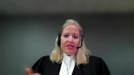

Law Society of Saskatchewan v. Peter V. Abrametz
This transcript was made with automated artificial intelligence models and its accuracy has not been verified. Review the original webcast here.
Justice Wagner (00:00:53): Bonjour, veuillez vous asseoir, s’il vous plaît.
In the case of the Law Society of Saskatchewan against Peter V. Abramets, for the appellant Law Society of Saskatchewan, Alissa Tompkins, Paul Daly and Charles R. Daou.
For the respondent Peter V. Abramets, Amanda M. Quayle-Quesy, Gordon J. Kowski-Quesy, Lauren J. Wihak.
For the intervener-attorney-general of Ontario, Alexandra Clark and Matthew Chung.
Pour l’intervenant de procureur général du Québec, maître Stéphane Rochette, maître Abdou Thio.
For the intervener-attorney-general of British Columbia, Mira Bennett and Robert Danais.
For the intervener-attorney-general of Saskatchewan, Laura Mazenk and Joana Van Perez.
For the intervener of the Law Society of Alberta, James T. Casey-Quesy and Katrina Hammond.
For the intervener of the Law Society of Manitoba, Eilie Klein.
Pour l’intervenant barraud du Québec, maître Sylvie Champagne, maître Nicolas Legrand-Hallari et maître André-Philippe Mallette.
For the intervener College of Physicians and Surgeons of Ontario, College of Nurses of Ontario, Ontario College of Pharmacists and Royal College of Dental Surgeons of Ontario, Lisa Brownstone, Amy Block and Linda Rothstein.
For the intervener Federation of Law Societies of Canada, Eva Gajuska, Manu Chaudhuri.
For the intervener Alberta Securities Commission and British Columbia Securities Commission, Laurence Burner, Tracy Knight, Jennifer L. Waitley.
For the intervener Canadian Association of Refugee Lawyers, Audrey Maitland and Prasanna Balasundaram.
Ms. Thunkens.
Speaker 1 (00:03:27): Monsieur le jugeant chef, Honourable Justices, for the first time in more than 20 years, the issue of administrative delay is squarely before this Honourable Court.
My client, the Law Society of Saskatchewan, submits that the flexible and contextual framework set out by this Honourable Court in Blanco remains appropriate to the administrative context.
Such an approach is necessary to account for the full galaxy of administrative decision-makers which come in all shapes and sizes.
While the framework remains appropriate, administrative decision-makers in lower courts would nevertheless benefit from some guidance from this Honourable Court in terms of the application of the test, and we will highlight in our submissions in particular the role of acquiescence and waiver as well as remedial discretion and its relationship with prejudice.
For all certainty, however, my client submits that on any articulation, any version of the test, the appeal should be allowed.
And we say this for three reasons.
First, the Court of Appeal ignored facts found by the Hearing Committee.
Second, they made findings of their own that had no basis in the evidence.
And third, they erred in law, either in misapplying the Blanco test or in changing the law contrary to the principle of stare decisis.
And this is why we’re here today.
Our submissions today will proceed in three parts.
First, we’ll address the Blanco test, where the test for delay in the administrative context.
Second, the application of the test to the case at Barr.
And third, the issue of standard of review.
My co-counsel Paul Daly will address the issue of standard of review, and in particular the analytical framework by which the standard of review is applicable to issues of administrative delay.
And he’ll deal with the precise reviewing framework and how we get there based on the previous case law of this Honourable Court.
My submissions will proceed on the basis that some deference was owed and none was accorded.
So, under any framework, whatever you call it, reasonableness, a margin of deference, palpable and overriding error.
Some deference was owed, particularly on findings of fact.
And in this case, the Saskatchewan Court of Appeal failed to defer to key findings of the Hearing Committee.
And again, whatever you call it, those findings were entitled to deference and none was accorded.
Justice Rowe (00:06:14): Now, it’s interesting that the word findings in English is used for several things.
I usually associate findings with findings of fact, but sometimes people use findings to mean a conclusion of law, and they aren’t really the same thing, are they?
Speaker 1 (00:06:40): No they’re not, Justice Roe, and as I go through my submissions I’ll look at the types of findings that are being made, types of findings in terms of whether a delay is an inordinate, whether or not there’s prejudice, and then in assessing the public interest.
And at each point I’ll address where the deference is owed, and again Mr. Daley will address the analytical framework by which we say that that deference is owed, but the point is taken that yes on different specific issues what the nature of the finding is is highly relevant to the applicable standard.
So in this case before I launch into the Blanco test I’ll just provide a few key facts about the respondent and how we got here.
The respondent was found guilty of four counts of conduct unbecoming, and let us recall that those findings were upheld at the court of appeal and were not challenged before this court.
The hearing committee found that the respondent wrote checks to a fictitious person.
He endorsed and cashed the checks himself, and the hearing committee characterized this as having enlisted his clients in a dishonest scheme.
He then created misleading statements of account, statements of adjustments, and again the hearing committee found that this constituted a deliberate and calculated effort to deceive and conceal that scheme.
Mr. Abrams, the respondent, was also held to have charged unreasonable, sometimes usurious, rates of interest to vulnerable clients for the necessities of life in a situation where the hearing committee found there was undue influence, and the hearing committee also noted that the respondent demonstrated a cavalier attitude and a lack of remorse for his conduct.
Six months after being found guilty on the merits, the respondent brought a stay application before the hearing committee on the basis of delay, and the delay, and I’m happy to get into it into more detail, but at broad strokes, from the charge to the start of the hearing, the formal complaint was 19 months.
The investigation phase before that was 35 months, just under three years.
Justice Côté (00:09:11): Mr. Tompkins, is it a position that we should start to calculate the delay from the date of the charge or from the date the investigation began?
Speaker 1 (00:09:24): That depends, Justice Côté, in some ways on what test is is applied and to the extent the court were ever to move to a presumed prejudice type model like Jordan, we say it would have to be from the moment of the charge, but typically we acknowledge the case law.

I’m freezing.
Okay, I’m going to keep going.
I seem to be frozen, okay.
We acknowledge that the better position in the case law is when the investigation starts.
So that’s the point where typically the clock has started counting in the administrative law context.
Justice Wagner (00:10:11): Miss Thompson, Tompkins, I’m sorry, can you hear me?
Overlapping speakers (00:10:17): Yes, I apologize.
I froze there, Chief Justice.
Justice Wagner (00:10:20): I like your comments on the delays.
Don’t you think that the delays are too long?
Seeing as the Law Society is in charge of discipline for lawyers, don’t you think that the Law Society should be the leader in terms of exercising its jurisdiction within the reasonable delay, which should be, and I’m asking your opinion, much shorter than that?
Speaker 1 (00:10:50): In this case Chief Justice we submit the delay was reasonable for the reasons found by the Hearing Committee that the case was complex for extensive documents.
The issues were complex and these are factual findings to which delay is owed.
To the extent that the Law Society should be a model we think that the Court of Appeals approach veers dangerously towards the policing of prosecutions that the Ontario Court of Appeal cautioned against in Abbott.
The Law Society needs to be able to prosecute as they determine is in the public interest.
In this case there’s not there’s not a sustained period of inactivity of the type that has typically concerned the courts.
In this case we have a situation where there was a delay but it was explained.
Explained in a matter that was satisfactory to the Hearing Committee the individuals that see these types of cases many times and when they say this was complex the member went to great length to conceal his conduct.
They listened to Mr. Allen explain in the purposes of the conduct decision all the lengths that he had to go to to untangle the respondent’s fragmentary accounting system that they couldn’t rely on a document as found they had to determine whether it was in fact the false document that had created or the real one.
So yes yes we say that delay can be a problem but in this particular case the delay was not unreasonable.
Justice Rowe (00:12:31): Right, now you’ve said that the delay was not unreasonable, but is that really the question?

Is not the question whether the delay was such that in the circumstances it constituted an abusive process?
And the only reason I say this is because we can kind of slide back and forth into what’s the yardstick we’re applying.
Is reasonableness sort of the most just here?
Is it really the point?
Speaker 1 (00:13:01): Justice Roe, you’re quite right that the word, in fact, the bar is higher, reasonableness would be lower.
The proper bar is that set out in Blanco, which is inordinate.
And that’s inordinate to the point that the community’s sense of fairness would be affected.
So it’s a very high bar.
Now, the Blanco test, a good moment perhaps to take a quick review of what the test as set out by this court requires.
So the first step is the determination of whether a delay is inordinate.
And it’s not simply the delay itself.
In Blanco, there’s four or five contextual factors that the court is required to look at.
The nature of the case and its complexity, the facts and the issues, the purpose and nature of proceedings, in this case, professional discipline, whether the respondent contributed to the delay or waived the delay or any other circumstances.
So it’s not just the delay.
The court is required to assess whether the delay is inordinate, taking into account all of those factors and to a point that the community’s sense of fairness would be offended.
And after that, the second step in the Blanco analysis is to consider the issue of prejudice, the effect of the delay.
And there are two branches there.
Now, the first branch, hearing fairness, it’s not at issue in this case.
The respondent is not arguing that any delay prejudiced his right to be heard or to respond to the case.
We are talking about the second branch, the rarest of cases, to quote Justice Basraj, of the personal prejudice branch of the Blanco test.
And in the event that prejudice is found, and let’s recall it’s substantial prejudice, substantial personal or psychological prejudice that would justify, that would meet the bar that this honorable court said in Blanco.
Only at that point do you move on to the second branch.
Justice Wagner (00:15:27): Yes, Mark?
Speaker 2 (00:15:29): We seem to have lost connection with counsel for the appellant.
If the court wishes, we may just attempt a couple of minutes here to regain access to help counsel reconnect, or it’s…
Overlapping speakers (00:15:50): How much time do you need?
Speaker 2 (00:15:51): a break.
We can do an essential assessment for within
Overlapping speakers (00:15:56): two minutes all right so we’ll wait
Speaker 2 (00:15:59): Thank you.
We’ll return in a moment.
Thank you.
Speaker 2 (00:18:04): Pardon the interruption, Mr. Chief Justice and Justices.
Miss Tompkins is now online.
She also has agreed that if the camera were to turn off again, but audio remains available, she is willing to continue with her submissions without the video.
If it pleases the court.
Very well.
Thank you.
Justice Wagner (00:18:26): Thank you.
Speaker 1 (00:18:39): Justices, I apologize for that delay.
I’m not sure at what point my my feed cut out.
I had been just at the point where I was going to speak to the court about what the Court of Appeal did in this case.
Justice Wagner (00:18:55): Come back. You have
Justice Brown (00:18:58): You cut out, you were talking about substantial personal prejudice as being the threshold, and then only at that point do you move on, and that’s where you cut out.
Speaker 1 (00:19:11): Okay, so what I would have said next was that the next step upon a finding of substantial prejudice is the consideration of whether or not a stay should be granted.
And such an analysis requires the decision maker to balance the public interest in the enforcement of legislation against the prejudice caused by the delay.
Justice Jamal (00:19:35): Ms. Tomkins, could I ask a question?
Of course.
On the element of personal prejudice, what do you do in terms of that requirement?
In a situation where you don’t have prejudice to the fairness of the hearing, you can’t demonstrate personal prejudice, but yet the proceeding has gone on for let’s say a decade hypothetically.
What incentive is there for any administrative tribunal to get on with it and render timely justice if there’s a strict requirement of prejudice?
Speaker 1 (00:20:09): Justice Jamal, we would say that in the most exceptional circumstances where a delay, where there’s been prolonged periods of inactivity, for example, there’s some examples in the case law where a regulator doesn’t even contact someone for three and a half years.
At a certain point, and it would be in the rarest of situations, the public interest is actually harmed by a dilatory regulatory process.
And the prejudice in theory could be something other than personal prejudice.
And one example that I can think of from the case law is what happened in New Brunswick in 2020 in the Emond decision where the court of appeal had originally found in 2017 delay insufficient to justify a stay, the public interest prevailed.
In 2020, the delay continued, but in that case the reason, so the focus needs to be on the cause of the delay.
The cause in that case was that the government had simply refused to appoint bilingual adjudicators.
And the court held that it was offensive to the public interest that the delay was caused by simply a refusal to appoint bilingual adjudicators in a bilingual process.
So again, it’s a very specific case where the cause of the delay itself becomes offensive to the public interest.
Justice Brown (00:21:35): So doesn’t that kind of undermine the bright line that is drawn in Blanco itself, right?
I think on the logic of Blanco, it’s not useful to look at the cause of the delay because the absence of prejudice is determinative.
But what you’re saying, I think, if I’m understanding Ms. Tomlinson, I may not be, is that at some point the cause of the delay is of such a quality that now that itself may be the basis for a state irrespective of the absence of prejudice.
Am I understanding you right?
Speaker 1 (00:22:12): it would be the most exceptional of circumstances and prejudice nevertheless remains a factor that would have to be balanced.
So the the existence or not of prejudice is still highly relevant.
We just could contemplate a few extreme scenarios that have come up in the case law where where it rose to the level that the prejudice arises not to the individual but to the administration of justice.
But generally speaking we are saying that the prejudice the prejudice requirement definitely remains and an absence of prejudice will be highly relevant particularly where the remedy is not is a stay.
That should this court decide to lower the bar to prejudice at all that does not mean that the bar to a stay should be lowered and in such cases it it would be the presumptive approach should be another remedy an alternative remedy.
Justice Karakatsanis (00:23:10): Can I just ask you, can I just ask you, assuming for a moment that in fact the test that’s laid out is appropriate for a stay, and you’ve asked us what would be the role of some lesser prejudice in terms of other remedies, my question to you is this.
Is the tribunal or the court entitled to take into account delay or prejudice that doesn’t rise to the level to justify a stay in determining remedy, in awarding costs, in looking at other kinds of orders?
Does it have to be tied to a finding of abuse of process?
That’s my question to you.
Speaker 1 (00:23:57): No, Justice Karygis-Santos, the court is not so tied.
And we see that, for example, in the Wachtler decision, where the court reduced the penalty by several months.
And we see the court grappling the 2017 decision, the Ontario Court of Appeal in Abbott.
What was before the court there was whether or not the delay should be served so as to reduce the penalty.
So those are the types of options that are available.
In fact, they were referred to in Blanco.
Justice Brown (00:24:28): It’s always awkward though with the Law Society, isn’t it?
Because the Law Society is there to protect the public.
If disborrow of Mr. Abramowitz is necessary to protect the public, then really could we, and I realize in the abstract, we could be looking at other instances where a reduced penalty may be appropriate, but maybe it wouldn’t be appropriate in the case of the Law Society.
But what I’m wondering is what about something like, you know, to go back a little bit into the mists of the common law, what about a writ of procedendo or something like that, a hurry up order, get on with it.
Speaker 1 (00:25:00): Absolutely, and that should be the presumptive remedy.
We support the Attorney General of British Columbia’s submissions in that regard, and that links as well to our points dealing with the factor of waiver and acquiescence, that presumptively where there’s a delay that’s becoming prejudicial, the administrative member ought to take steps in advance, meaningful steps, to address the issue of delay.
Justice Côté (00:25:28): And I think that’s a very good point.
On that aspect, we know that the jurisprudence under section 11b makes a distinction between a waiver and mere acquiescence that our jurisprudence does not equate the two.
So I know we are not in a criminal law case, but is there
Speaker 1 (00:25:55): Well in fact, Justice Cote, that’s one of the areas where we say this court can draw from the 11b jurisprudence.
We say the presumptive ceiling is highly inappropriate.
We do say though that the courts in Jordan, the courts extensive talks extensively about the role of all litigants in the process and where the presumptive ceiling is not met, there’s an extensive discussion in the case law about the meaningful steps that Council must take.
So it’s not just waiver, Justice Cote, it’s not even just acquiescence.
In the 11b context, this court has gone so far as to say defense council must demonstrate the steps that it took to expedite the process and we think a similar message from this court to all litigants in the administrative process would be a helpful guidance in addressing any issues of delay, systemic issues that the court might see.
Justice Côté (00:26:51): interest, it is not disputed at all.
Is there a burden on the law society to take the necessary steps to bring the matter forward in an expeditious manner?
Speaker 1 (00:27:06): A burden, I think it’s part of what I was referring to is a responsibility to move the matter forward diligently at the same time.
We must not get into policing prosecutions.
So the Law Society is a self-regulating body with a limited amount of resources.
So what we ought not to do is have courts retrospectively second-guessing decisions that were made.
But in this case, for example, there’s an evidence that they did take the necessary steps.
Where the proceeding was being bogged down by the tax issues, they bifurcated so that they could move ahead with these charges and avoid further delay.
How long did it take them?
Justice Moldaver (00:27:50): How long did it take them to bifurcate?
From the time they knew about the tax problem…
Speaker 1 (00:28:02): The time that it took them to buy for Kade’s, I mean, it’s the tax problem.
That was what all the information requests were about.
I understand what it was all about.
But I want to know how long it took them.
Justice Moldaver (00:28:13): I want to know how long it took them to come to change their strategy and say, look, we should be getting on with the trust matters.
This tax thing is just taking us out to sea.
And we have to be proactive in bringing the lawyer to a hearing on those matters because right now, those matters we consider to be serious.
The lawyer is still practicing.
There’s a public interest here.
So let’s sever the tax thing right off the bat or soon after.
I don’t see that happening here.
But just go ahead and answer my question.
How long did it take to sever?
Speaker 1 (00:28:59): They, the exact point in which that determination was, so it was at the point where the charge was made, October 2015.
So that’s the point where the formal complaint was made on the basis of these charges.
The, there was a significant amount of correspondence in, and this is all set out in the Huber affidavit, at paragraphs eight, nine, and 10, in terms of the various requests for information.
In March, April, May of that year, in June 2015, they brought their section 63 application.
And it’s at that point in time, I would say the decision was made to bifurcate.
Then through the summer, they formalized the exact charges, and the formal complaint, the charges were issued in October 2015.
So it took a while, they kept asking the member for more information, and he was refusing to provide it.
So at the same point that they decided to actually go to the Court of Queen’s Bench and seek that information, the decision was made and formalized in October 2015 through the charges.
Justice Côté (00:30:06): But Ms. Tompkins, you were aware, the Law Society was aware as early as October 2013 of the member’s objection regarding the production of the tax returns.
And it took only, the Law Society took almost two years to file its Section 63 application.
Speaker 1 (00:30:29): Justice Cote, during that period, there was also a massive trust audit conducted, and there was 15,000 documents reviewed, 27 five-inch binders.
The records, the transactions were constructed out of paper that the investigator had to determine whether or not it was authentic or whether it had been recently generated by the member in an attempt to conceal.
So it wasn’t just that.
When the Law Society got in there, the conduct that was identified, there’s no doubt that they viewed it as serious, and we see that by how quickly they moved to interim suspend, and it’s at that point that they’re moving to protect the public.
Justice Moldaver (00:31:16): 19 months from the interim report on the trust matters to actually formalizing the charges.
And by the way, if you look at paragraph 182 of the Court of Appeal, you may disagree with this, it says that Mr. Allen described his investigation as considerable, exceptionally difficult to examine Mr. Obama’s confusing records.
Beyond those general statements, very little evidence of what Mr. Allen did in 2013 and no particulars of what he did in 2014, other than he completed his trust report in October of 2014.
I mean, this is the kind of thing where there’s a gap, it seems to me, in the Law Society’s explanation.
There’s no explanation for that kind of delay.
No particulars whatsoever.
And of course Blanco and other cases have said, is the delay unexplained?
And if it is, then there’s a problem.
But more importantly this, and I’ve got to get back to this, it seems to me that in cases like this where the Law Society’s involved, where there’s a serious allegation against a lawyer and where there are public interests involved, both sides, as we’ve been talking about, have an obligation not to sit back, not to take a reactive approach to things, but to take a proactive stance.
And that may in some instances, I say respectfully, cause the Law Society or a body like it to change its litigation strategy, to get off the tax thing, to realize that the tax thing is just a thorn in the side of this thing getting going.
So move it off the table and get going on the ones that you can get going on.
I mean, and from Mr. Bramwood’s point of view, why isn’t he standing up and saying, you know, this is crazy.
We should be getting on.
I want to get on.
And he did cooperate as I understand it until the tax problem arose.
And then the thing went off the rails.
Speaker 1 (00:33:26): Justice Moldaver, I’ll take on your question in two parts.
First, in relation to the explanation, John Allen provides in his affidavit six paragraphs of explanation.
And let us recall, and this is in the record, I would draw the court’s attention to tab 27 of volume four of the record and the submissions on this issue.
Mr. Allen’s affidavit was not contested.
In fact, Council for the Law Society stated that all affidavits by the Law Society were fair.
They were a fair description of what had transpired.
Same with Mr. Huber’s affidavit, because later the Court of Appeal, on its own accord, decides to ignore and reject the evidence in Mr. Huber’s affidavit.
Even though both parties told the hearing committee yes, this is a fair description of what happened.
Overlapping speakers (00:34:26): The, uh, and, okay, I’ll let you finish, sorry.
Speaker 1 (00:34:30): I just wanted to provide the quote of that exact reference, but continue with the question and I’ll provide the reference.
Justice Rowe (00:34:42): I’m going to go off in a slightly different direction.
I mean, it’s not for us to tell the Law Society or the prosecutors how to do their job, but I mean, looking back on my experience, I’ve sat on appeals, and one trial actually, of questionable financial transactions, shall we say, to use the broadest possible wording, and the investigators have been faced with hundreds of transactions, and they decided to investigate every single one of them.
In one case, it took 10 years, 10 years, as opposed to saying, we’re gonna do 10, if we have sufficient evidence to demonstrate wrongdoing, we’ll proceed with these 10, we’ll ignore the other 90, because a conviction on 10 is as good as a conviction on 100.
But no, they just doggedly said, we have to go through every single scrap of paper and every single transaction here, and it just turns into, I mean, like the 100 years war.
And I mean, I don’t know what the answer is, but you know, I’ve never understood why they insist on doing it.
Speaker 1 (00:36:05): Again, the Law Society, as has been repeatedly emphasized by this court, is in the best position to assess the public interest.
And when they are investigating a matter, particularly a matter like this, that involves allegations of tantamount to fraud, of concealment, creation of false documents, the Law Society made a choice that they wanted to determine the full extent of the misconduct.
And they made that choice.
And as I said, it is not for this court to police the prosecutions of self-regulating bodies.
And coming back to Justice Moldaver’s question, I do submit that in this case, they could have hived off the tax issue once the report was done.
And October 2014 is when Mr. Allen delivered his trust report.
But even then, they were, at that time, still trying to do it together.
And the member himself later complained that they bifurcated it because he viewed them as being linked.
The Law Society, though, in this case demonstrated concern.
They demonstrated concern for delay.
And that’s something that distinguishes this case from other cases in the case law where there’s been a successful Blanco application.
Overlapping speakers (00:37:20): Miss Tom demonstrated.
Go ahead, finish your answer.
Speaker 1 (00:37:24): They demonstrated that again in 2017 when the member made a meritless complaint against Council, Mr. Huber, the Law Society, in order to avoid delay, retained outside Council and they proceeded with the hearing dates, notwithstanding they only had two weeks notice.
So this is not a case where you have an administrator, a regulator who’s being complacent and insensitive to the issue of delay.
This is not a case where you have an administrator, a regulator who’s being complacent and insensitive to the issue of delay.
This is not a case where you have an administrator, a regulator who’s being complacent and insensitive
Justice Brown (00:37:49): Ms. Tompkins, you signaled a while ago you want to talk about waiver and I want to hear from you on waiver and in your submission on it, I wonder if you can sort of address attention that I’ve been trying to resolve in my own mind.

So the idea of waiver is dissatisfied party has to object to a procedural flaw as soon as possible, right?
And so that concern has to be taken before the administrative decision maker, the administrative decision maker will make a decision and that decision will be typically interlocutory.
And bearing that in mind, I wonder how and whether a judicial review from that decision can be brought in light of what let’s call the principle of prematurity, which is kind of a general rule that judicial review and I realize we’re dealing with an appeal, but humour me, of administrative matters before final decisions are barred.
So it’s kind of, it’s one of the main distinguishing aspect between review or appeal on a procedural matter as opposed to a substantive decision on the merits, it’s interlocutory, how do we respect the process of the tribunal while at the same time accounting for the principle of waiver?
Speaker 1 (00:39:24): Thanks, thank you Justice Brown.
I will then turn to waiver to address your question and we say waiver and acquiescence as I’ve said that the message that the responsibility to address delay rests on all participants continues to be our submission.
In relation to the issue of the concern about interlocutory we do think that the issue of waiver or any concern about delay should be brought to the decision maker as soon as possible for the reasons Justice Brown has alluded to being it gives the opportunity to the decision maker to correct the problem.
So that’s the policy interest in asking persons to waive concerns about delay.
The concern about a judicial review, Justice you’re quite right that the I would call it the doctrine of exhaustion or prematurity generally precludes judicial reviews of that nature that said there is an exception for exceptional circumstances and if a delay was causing prejudice on the order that could ground a remedy under the Blanco framework it could well constitute such a situation though we would submit that the better better approach is for the issue to be raised before the tribunal for the matter to continue and then the entirety of the case to go on judicial review interlocutory judicial reviews could result in further delay as delay applications are heard so as I said it would be of the doctrine of exhaustion should apply such that it would only be in the most exceptional circumstances the better approach is that the issue is is raised ideally as we said the remedy sought should be an expedited or peremptory timetable and if that if that application is refused generally speaking the proceedings should be allowed to continue and then the issue be raised at the end what we don’t want is a situation like this where six months after a finding of conduct on becoming the member jumps out and says there’s been delay throughout the process and let’s recall in this case the respondent sought to adjourn the proceeding when one is talking about prejudice we submit that where a party has sought to adjourn there is a strong inference that there is no prejudice it’s difficult to reconcile how someone can say I was suffering from this terrible prejudice
throughout
but I’m gonna seek to it I’m gonna seek to adjourn even I’m gonna seek extensions all the time that also becomes problematic so it’s relevant in terms of the calculation
but also when we’re assessing prejudice which which as I’ve said the bar should remain very high because of the public interest in these proceedings taking place
Justice Kasirer (00:42:15): Ms. Tompkins, you said at the outset that these measures vary according to the administrative decision-maker in question, and I’m wondering what justifies in the case of a law society slowness.

I mean, one can imagine delays associated with an inhibition of a patient of a doctor to denounce abuse, that that’s inherent.
The delay is inherent in that process, but what’s the reason for a law society showing delay?
What is it specifically about the decision-maker that justifies the delay in the case of a law society, as opposed, you know, total information can’t be the reason.
Complexity just tossed out can’t be the reason.
Speaker 1 (00:43:13): Well, it can be in some cases, but I gather that Justice Cassirer, your question is more general than the specifics of this case.
So I would refer the court here to the Law Society of Manitoba submissions in relation to particularly funding decisions, resource allocation issues.
Those are referred to in some of the case law in Ontario, where the Law Society, for example, had made mortgage fraud a priority in its prosecutions.
So this is not a case where a choice was made to under-resource this file.
Let’s be clear.
Mr. Allen spent 800 hours on this file during the period where they say the delay was unexplained.
There was a lot of work happening in the hearing committee.
I come back to that.
The hearing committee made those findings.
The hearing committee that sees discipline prosecutions all the time had no problem concluding.
And I’m at paragraph 357 in tab 3 of our condensed book.
In this case, the nature and the number of allegations of conduct unbecoming, the total number of client files reviewed and documents examined during the investigation, and the lengths to which the member went to conceal his conduct were extensive and complex.
So not just extensive, as the Court of Appeal says, but also complex.
While the member initially cooperated with the investigation, that cooperation ceased in May of 2015.
Importantly, the member should be credited with a significant share of any delay in these proceedings.
And again, those are findings the hearing committee made based on evidence that was agreed to.
So the Court of Appeal, I’ll give the example.
The hearing committee says we accept Mr. Huber’s evidence that 14.5 months of the delay are attributed to either the member or his counsel being unavailable.
The Court of Appeal, in its reasons, rejects that.
And recall, as I said, in relation to that, in the submissions, at tab 27, page 333 of the volumes, counsel for the respondent, I should say that the affidavits filed on behalf of the Law Society, I think, fairly describe the circumstances of how we got today.
Page 337, Mr. Huber’s affidavit, I think, is a fair rendition.
And then we have a Court of Appeal saying, no, no, I’m going to reject that evidence.
That’s hugely problematic.
So if I can just, I don’t have that much time left, so I do want to highlight some of the other concerns with the Saskatchewan Court of Appeal’s findings.
I’m just going to reiterate.
The Court of Appeal, in its reasons, rejects that.
Page 337, Mr. Huber’s affidavit, I think, is a fair rendition.
And then we have a Court of Appeal saying, no, no, I’m going to reject that evidence.
That’s hugely problematic.
So if I can just, I don’t have that much time left, so I do want to highlight some of the other concerns
Justice Rowe (00:45:56): very quickly, a simple point.
There’s a difference between complexity of a transaction, in other words, you move the same amount of money through 33 shell companies in the Cayman Islands, the Channel Islands, et cetera, and the multiplicity of transactions.
If you have 100 transactions of a similar nature, it doesn’t mean there’s any complexity.
And so, you know, I made my point, I’ll leave it alone, but sometimes you don’t have to turn over every stone to do your duty.
And if you choose to turn over every stone and it takes a really long time, maybe there are consequences.
Ms. Tompkins, I…
Justice Brown (00:46:44): I know your time is limited, but I really, I’m sorry, I want to pull you back to your answer to my earlier question about remedy.
As I understand it, you’re saying, you’re saying there’s exceptions to the doctrine of prematurity or exhaustion where it’s causing prejudice or substantial prejudice.
Is it your submission then that that exhaustion or that exception really amounts to the same conditions that would support the granting of a stay?
If so, or if not, how is it distinct?
And I also want to know, are you saying that there are other remedies like a hurry up order that could be granted where in fact the conditions for a stay, in particular prejudice, whether short of an inordinate or none at all is extent?
I think there’s two questions in there.
So on the issue of remedy and.
Yeah, there’s probably a whole bunch, I’m sorry. Yeah.
Speaker 1 (00:47:57): and remedy and prejudice, I’ll say first that yes, at paragraph 125 of our fact, and we talk about a proportionality principle.

And I would say that Justice Bastarache’s comments in Blanco dealing with the extremely high bar are very much made in the context of a stay being sought.
And we say that that high bar needs to absolutely exist where the stay is sought because of the public interest in the matter being decided.
And the respect for legislative intent that the administrative decision maker be allowed to do its job.
But we’re allowing that where there’s, for example, a remedy of an expedited process, that the prejudice could conceivably be a bit lower.
So we’re acknowledging that there should be some prejudice, but where it would be lower, and the remedy sought is lower, as long as it’s proportionate.
Effectively, we’re arguing that a proportionality principle infuse the Blanco analysis.
Now, in terms of, specifically-
Justice Moldaver (00:49:02): I’ve got to interrupt you, if I may, I apologize, but isn’t that effectively what the Court of Appeal seems to have done here?
Justice Basterasch made it clear that to get a stay of the proceedings, i.e. the whole thing is wiped out, there’s got to be inordinate delay and serious prejudice.
Now, I don’t understand the Court of Appeal disposition here, frankly, because they uphold the findings of liability or guilt or whatever you want to call them, the findings of misconduct.
But then they go on and stay the whole penalty part.
And so it seems to me that maybe what they thought they were doing was giving a lesser remedy short of staying the entire proceedings.
I mean, I’ve never seen anything like this.
The application was, for example, in Blanco, to stay everything, just stop it.
What is going on here?
Speaker 1 (00:50:01): Well if we look at what the Court of Appeal did and we use the language of supercharging in our factum but what we’re actually referring to is lowering of thresholds.
So lowering the threshold for a finding of inordinate delay in particular by policing the actions retrospectively of the Law Society but then lowering the bar for prejudice and this is another problem where they interfere with the findings of fact by the Hearing Committee.
The findings of fact by the Hearing Committee were in fact for example that the practice conditions were not overly restrictive of the member’s practice.
They stated no evidence was presented to suggest that the practice conditions had hampered the member’s practice professional activities or freedom.
No evidence had been tendered indicating that the regular involvement of Mr. Kirkby, that was the supervising solicitor, had been challenging for the member and again I’m at tab three of our condensed book.
With respect to health they said there was no medical evidence led there was only a bald assertion by the member.
Justice Moldaver (00:51:02): I don’t want to get you, you’ve got your times limited and you’re not really, with respect, hitting my concern, which is, did the Court of Appeal effectively, rightly or wrongly in terms of the end result, did they really, in effect here, impose an order that is less than a stay of proceedings?
And they reduced it a bit and they said, okay, we’re going to, we’re going to, we’re going to reduce the penalty right out of existence, which may be way too much, but we’re going to do that.
And that is less than what is being asked for here, which is this proceeding was really stopped in its tracks, the whole thing.
Speaker 1 (00:51:54): Justice Moldavar, I apologize.
I thought your question was dealing with prejudice.
No, with respect to the remedy, they did accord a say.
And so a member that was found to have committed these serious allegations is left to practice with no conditions.
So that’s where we say they failed to take into account the public interest and the forward-looking nature of…
Justice Moldaver (00:52:17): upholding the why are they holding the liability findings then it’s either either the whole thing was inordinate and lots of prejudice in which case we stay everything we don’t just stay part
Overlapping speakers (00:52:31): They don’t say.
Justice Moldaver (00:52:31): I mean, the prejudice remains the same throughout.
The inordinate delay remains the same throughout.
I’ve never seen an order like this, this sort of, well, we’ll give you half a stay.
Speaker 1 (00:52:43): They stayed the entire proceeding, it’s, it’s done.
Justice Moldaver (00:52:48): I’m sorry, I don’t think so, because how then do they uphold the professional misconduct?
Speaker 1 (00:52:54): Well, they do that first because those were challenged as well.
The Notice of Appeal challenged those issues as well and as well as penalty, in fact, and the Court of Appeal did not deal with penalty.
But that was that was distinct.
The the Court of Appeal upheld the findings of conduct, but said effectively, nevertheless, notwithstanding all of these findings, we’re going to stay the matter because of unreasonable delay.
Justice Moldaver (00:53:19): the two live together?
That’s what I’m asking you.
How can the two live together?
Speaker 1 (00:53:26): Well, in this, we say in this case, given the gravity of the misconduct, they can’t.
It undermines the public interest.
But we’ve seen other cases, for example, Robertson in British Columbia, where there was a 35-year delay.
It was insane.
But again, the public interest prevailed so that there was no stay.
So the misconduct and the stay is always inexorably part of the stay application.
So how do they fit together?
Well, here we say they don’t.
Because there was very serious conduct and in their stay decision, and by the way, it was extremely brief reasons, they minimize the misconduct they just found.
And we say that’s part of the error.
They minimize the misconduct that was found, failed to take into account the public interest by overemphasizing the fact that there was no complainant in this matter.
And ignoring that the public interest as regards a law society is protecting the public on a go-forward basis.
So we say absolutely that it doesn’t sit well together, and that’s the error in terms of remedy.
But they stayed the proceeding.
And I agree they sit uncomfortably in light of the analysis required in the context of a stay.
But that is what was done.
No remedy other than a stay was sought.
Justice Moldaver (00:54:51): Really, if I equate it briefly to the criminal, it’s, you know, the delay was inordinate, the prejudice was huge, so we’re going to uphold the conviction, but then we’re going to stay the sentence proceeding, you’re free to go.
Speaker 1 (00:55:10): Isn’t that what’s happened in some cases involving 11-B?
That had the murderers have been there’s been a stay in murder charges as a result of that.
Justice Moldaver (00:55:23): proceeding, they’ve stayed the murder charges.
Sorry, I’m wasting your time, I think.
What I’m really trying to get at here is did the Court of Appeal effectively reduce the penalty in effect or give a reduction because they only dealt with it at the penalty stage.
They didn’t say the whole proceeding goes and that it was an abusive process warranting a stay of the proceedings.
Speaker 1 (00:55:54): I believe they did say that the entire proceeding was an abuse and warranted a stay, it wasn’t simply the penalty.
The Law Society is not entitled to continue on these charges at this time and that’s why we say the appeal has to be allowed.
Justice Moldaver (00:56:09): entitled to say that he still has a record before the Law Society of findings of misconduct?
Does that stand?
Speaker 1 (00:56:21): Well, they’ve stayed the entire proceeding, those findings, I suppose, are still there, but he’s without consequence, so it’s not that he’s without consequence, it’s that he’s
Overlapping speakers (00:56:32): Maybe in a cloud somewhere.
Speaker 1 (00:56:34): Moldaver you’re referring to I think technically but let’s be clear that the the penalty awarded by the Hearing Committee was disbarment without right to reapply for two years and that that didn’t happen under under the state of proceedings Mr. Ebermits is now free to carry on the practice of law without any conditions and that’s the part that that creates the prejudice to the public interest.
Justice Rowe (00:57:00): Just for reference, in the order from the Court of Appeal, 1B reads, the penalty and cost awards imposed by the penalty decision are set aside. That’s B.
And then C, the findings of professional misconduct in the penalty decision stand.
So I agree with Justice Moldaver.
It’s a bit of an odd combination.
Speaker 1 (00:57:22): It’s a bit of an combination, but it doesn’t alter the concern here, which is what this means for the Blanco test.
And as I’ve said, the implication and the reason I thought Justice Moldaver was getting into prejudice is that that’s really where the bar was lowered significantly.
The hearing committee basically found no prejudice, and the Court of Appeal interfered with those findings of facts or arguably inferred prejudice, basically adopted a presumed prejudice model.
It’s a bit unclear, but they were either interfering blatantly and without basis.
As I’ve pointed to, there was no evidence in some cases where the hearing committee found there to be prejudice.
Justice Brown (00:58:07): Your concern, the gravamen of your concern, as I understand it, is that they didn’t apply Blanco properly because they made no finding, as if it’s any of their business to make a finding, but no finding of inordinate prejudice, and yet granted a stay, kind of, sort of, as Justice Moldaver points out.
I mean, that’s probably something Mr. Abernmentz’s lawyers may be able to enlighten us on, but it’s a strange thing.
But what I want to know from you is, I mean, you say that where there is a lesser degree of prejudice, some kind of alternative remedy may be open.
What if there’s simply no prejudice other than whatever prejudice might be inferred from the fact of the delay itself?
Is it your submission that there’s no remedy available and it’s just the march to justice, or is there a remedy, and if so, what kind of remedy?
Speaker 1 (00:59:05): These are the examples that I highlighted at the outset in my response to you, Justice Brown, that that we’re allowing that we would, we think that it introduces an element of subjectivity that could be problematic.
But if the court wanted to infer some prejudice from the delay itself, there would also have to be prejudice to the public interest.
For example, as I said, by prolonged periods of inactivity, by complete dereliction of duty by the administrative decision maker.
We’ve seen some examples in the case law, as I said, where there’s, you know, almost 10 years in the Air Transat case without a, there’s something there that, that nevertheless could result in a cost order, for example, as was the case there.
That there could be some remedy, but that a stay of proceedings, that the bar to a stay should remain incredibly high.
And with that, because we’ve adopted a proportionality analysis, that there’s, if the bar to a stay is, is high correspondingly, the bar for the prejudice must be exceedingly high as well.
So yes, is there, is there a situation such as IMO, as I mentioned, 2020 New Brunswick Court of Appeal, where the, the court was so offended that the government simply hadn’t appointed bilingual members, that they considered that the public interest had been prejudiced.
Could that, could that be the case? Possibly.
But again, it would be the rarest of circumstances.
And generally we say there should be prejudice, and we would caution against inferring prejudice.
You, otherwise you get into the exact difficulties this court ran into in the criminal context, distinguishing between actual and inferred prejudice.
Just to be clear.
Justice Kasirer (01:00:54): The Court of Appeal didn’t infer prejudice, did it?

I mean, wasn’t it, they took a different view and you would say perhaps that it’s a palpable and they substituted their, but they, paragraph 200, they measure the stress that Mr. Abramowitz suffered, the stress 201, the stress suffered by members of his family and his employees, this wasn’t deemed prejudice, they were taking a different view of the circumstances.
Speaker 1 (01:01:29): Justice Castillo, that is our primary position, that they interfered improperly in the findings of fact.
But if one looks at the evidence that was actually led in this case on prejudice, there’s so little there that I meant to say it was almost tantamount to inferred prejudice, when one looks at the paucity of evidence that was led by the member in relation to prejudice he was suffered.
Quite correctly, the Court of Appeal interfered with the findings by the Hearing Committee, but the effect of which, when one looks at what did the Court of Appeal do to Blanco, they lowered the bar significantly to prejudice and they lowered the bar significantly to a stay.
Justice Moldaver (01:02:12): If they come to the conclusion, if the Court of Appeal comes to the conclusion, let’s say rightly for the moment, that there was an inordinate delay here, but the prejudice did not reach a level to warrant a stay of the proceedings, stopping the whole thing, okay?
However, it does warrant some remedy short of a complete stay, and we’re going to deal with that in the sentencing process or in the remedy process.
Would that be okay?
Speaker 1 (01:02:47): In fact, Justice Moldaver, the statute in this case that was at the time, the statute governing the Legal Professions Act Section 53, at the end of the penalty decision, when they make the cost award, it’s in the context of the penalty.
So absolutely, that’s something that can be considered when they’re talking about delay.
When they…
Overlapping speakers (01:03:11): So in one case it’s a cost award, but it could be a reduction of the penalty, I presume?
Yes, and that’s why I’m saying it’s in the statute.
Okay, good.
Speaker 1 (01:03:19): And again, you see that in Abbott in the Law Society of Ontario or the Law Society of Upper Canada at the time, but it’s a frequent consideration.
It’s been done in the Wachtler case that both parties have relied upon.
So yes, and it was considered in this case, in the penalty decision, that’s what I was getting to, that they did consider it, but they said the delay was an inordinate.
Again, the hearing committee that listened to Mr. Allen explain what he did in the purpose of the, as through the conduct decision, there’s days of evidence where Mr. Allen explained what he did the whole time.
So even though that wasn’t specifically before them, they have the benefit of that experience.
Now I’m a bit, I’m a bit lost as to timing because of the period where, where I was, I lost.
I do want to pass the, the, the speaking over to my co-counsel, Mr. Daley, but I’m just not sure how much time we have left because of the delay.
Speaker 3 (01:04:47): Thank you very much.
Speaker 1 (01:05:05): Oh, sorry, was there a response to that question?
Justice Wagner (01:05:10): I was, I told, I was telling you that I would allow seven minutes to Mr. Daly to argue.
Speaker 1 (01:05:18): Okay, I apologize.
We didn’t actually hear that.
That didn’t come through.
So Mr. Daley is ready and he’ll take over now.
Thank you Justices.
Those are our submissions.
Overlapping speakers (01:05:27): Thank you.
Speaker 1 (01:05:28): on in North Italy.
Speaker 4 (01:05:39): Thank you and good morning justices.
As Ms. Tompkins has suggested the essence of our submissions on standard of review is that deference is owed to the careful considered and comprehensive application of the Blanco principles by the hearing committee.
This is an expert and experienced body of ventures seized at the matter for many months, heard live evidence over many days from the whole cast of characters and to use this court’s own procedural fairness terminology the committee was entitled to a margin of deference.
The margin of deference language we take directly from this court’s decision in Via Rail where Justice Abella said that considerable deference is owed to decisions by expert decision makers on matters of procedure.
Interestingly you’ll see that this is picked up by the Ontario Court of Appeal in Cezanne at paragraph 237 we see the Ontario Court of Appeal in a similar situation to this one saying that considerable deference is owed to the careful considered and comprehensive analysis of the decision maker which as we say seized at the matter for a considerable period of time.
The standard of review of procedural fairness issues is not correctness.
The correctness standard involves a court looking to what the best possible answer is to the meaning of a particular statutory constitutional or regulatory provision.
The test when it comes to fairness is was the decision was the process fair it is not whether the process was the best possible process in the circumstances.
Overlapping speakers (01:07:26): Is there any significance to this being an appeal, Professor Daley?
Speaker 4 (01:07:29): I don’t see any significance to this being an appeal, Justice Brown.
In Vavilov at paragraph 23, this Court explains that the Vavilov framework applies to issues of merits, not to process.
In Blenco itself, the delay issue was treated as a matter of procedural fairness, and so we would say that the Vavilov framework does not apply.
There are submissions from interveners which suggest that you can apply the Vavilov framework, and the Law Society of Saskatchewan would wish to put no obstacles in your way if you were to go down the route set out, for example, by the Procureur General du Québec, but our submissions are grounded in this Court’s own procedural fairness case law.
Justice Rowe (01:08:15): And so a statutory appeal flips into a judicial review when you look at procedural fairness.
That’s somewhat metaphysical, Professor.
Speaker 4 (01:08:25): I’m not sure Justice Roe that it’s necessarily metaphysical, we would say it’s a consequence of what this Court said in Vavilov.
But let’s be clear, there’s no objection from our quarter if this Court were to apply the Vavilov framework.
Whatever the framework applied here, the findings of the Hearing Committee, which are central here, are findings of fact based on evidence they heard, and having heard from the cast of characters, in those circumstances the level of deference due is considerable, whether it’s under Vavilov or whether it’s under Hausson.
These are findings of fact.
We’ll also say that my friend is not taking any issue now with the proposition that Blinco accurately states the law on inordinate delay.
That means that the Hearing Committee directed itself properly in law.
It made no extricable legal error in its analysis.
Therefore, there’s no basis for intervention.
A margin of deference, if it means anything, to go to Justice Casreiro’s question from a few minutes ago, means that a court should not intervene because it has a different view of the evidence from the decision maker which was tasked with making the decision.
I do want to mention Baker because my friend relies heavily on Baker.
I want to make two points.
First of all, Baker is subsumed into Blinco.
All of the Baker factors are there in Blinco.
The nature of the decision of the statutory scheme, that’s the nature and complexity of the proceedings.
The importance of the individual interest in Baker is the prejudice part of the Blinco analysis.
Legitimate expectations can be taken into account in respect of public interest and in respect of deference.
The fifth Baker factor, that cashes out here as a margin of deference to the analysis of the Hearing Committee.
My friend makes much of the third Baker factor, which is the importance to the individual interest.
He suggests this is an instance where one’s livelihood is at stake.
I would suggest that this is not a situation which involves the highest form of individual interest.
If you think about it, most procedural fairness claims will involve the proposition that some sort of procedural defect has deprived an individual of a substantive benefit, refugee status, housing, a license to practice a regulated profession.
But the proximate cause of Mr. Abramowitz’s inability to practice law, the proximate cause of his disbarment is his misconduct, not any procedural defect.
Had the process moved in a more speedy fashion, the result would have been that Mr. Abramowitz was disbarred sooner.
The individual interest here is the interest in practicing without conditions for the period of the investigation.
And that is an interest which is of a much lesser import, much lesser weight than the ability to practice the profession to go.
And if I may, in concluding, Chief Justice, you said that the Law Society should be a leader.
And I would submit that in this instance, the Hearing Committee was a leader.
The Hearing Committee here did exactly what we would want administrative decision-makers to do.
They heard evidence over many days.
They heard arguments.
They were responsive to the arguments made and to the evidence.
They grappled with the important interests at stake.
They engaged in the culture of justification that this Court put forward as a model for administrative decision-makers in Vavilov.
And for that reason, we say the Hearing Committee’s decision should be commended and it should not have been interfered with in the way that it was by the Court of Appeal.
If there are no questions, those are our submissions.
Justice Wagner (01:12:43): Thank you very much.
Thank you.
The court will take this morning break, 15 minutes.
Speaker 4 (01:13:27): The court, the court!
Justice Wagner (01:13:49): Thank you.
Be seated.
Miss Quayle.
Speaker 5 (01:13:59): Honourable Justices, together with my co-council Gordon Kuske, we are counsel to the respondent Mr. Abramowitz.
Mr. Kuske and I will be dividing the respondents oral argument.
I will start by addressing the standard of review question.
Mr. Kuske will then address the delay question including the legal test to be applied in the application of the laws to the fact of the case.
With respect to the standard of review question, the starting point is of course the nature of the right of appeal at issue.
This case involves a statutory right of appeal.
It also involves an issue of procedural fairness.
This court established the standard of review that for the framework that applies to statutory appeals in Favillov.
It is the housing standards that apply and just because the statutory appeal involves a question of procedural fairness, that does not transform the appeal into a judicial review.
The Saskatchewan court of appeal was thoughtful about this very issue and it went on to review the lines of authority considering procedural fairness issues in its decision.
I commend that review and analysis to you.
It is thorough and it is thoughtful.
In the end the court of appeal determined at paragraph 105 of its decision that the question of whether there has been delay constituting an abusive process is a question of law either because the question in and of itself is a question of central importance to the legal system or because it is a matter of procedural fairness regardless of whether hearing fairness has been compromised.
In either case it must be correct and the respondent agrees with these conclusions.
The appellant disagrees.
As you have heard its position is that the Favillov framework does not apply at all to questions involving procedural fairness.
Justice Brown (01:15:58): I think in the alternative she advances that it doesn’t matter in this case.
Speaker 5 (01:16:04): And so we would say that it does matter in this case because where the appellant fails to respect the issue of review is in its application to what is a legal standard being what is in fact the test to meet an ordinate delay that applies to an abusive process.
And so while we say and agree that on matters involving findings of fact or discretionary decisions the standard should be palpable and overriding error as established in Housen as to the question of whether there has been delay constituting an abusive process process that is a legal question or a legal standard and that standard should be correctness.
Overlapping speakers (01:16:54): Excuse me, may I ask?
Justice Martin (01:16:54): Do those discretionary decisions also include choices around procedures adopted?
Speaker 5 (01:17:06): In terms of what a tribunal is required to consider as to its own processes, there certainly is some discretion as to determining what is necessary for it to meet its processes.
Determining what those processes are is different than how in fact those processes are carried out and it is in that second respect that the hearing committee failed to consider what we view to be a legal standard as to the application of inordinate delay amounting to an abusive process.
Justice Jamal (01:17:45): Could I ask you, on the House and standard, would you agree that the findings made at paragraphs 357, 358 and 359 are essentially findings of fact, or makes fact and law to which deference would be owed?
And I guess the follow-up question is, do you think that the Court of Appeal showed sufficient deference to those findings?
Speaker 5 (01:18:10): Justice, are you referring to paragraphs from the Hearing Committee State Decision or from the Court of Appeal?
No, sorry, from the Hearing Committee State Decision.
Inaudible.
Justice Brown (01:18:28): Paragraph, page 38 of the record.
Thank you.
Speaker 5 (01:18:42): And so I would characterize each of those issues as findings of fact and I would refer you to how how we say the the test would apply in these circumstances and and we took we we believe the Saskatchewan Court of Appeal appropriately applied the decisions of findings of fact as against decisions of a legal standard and those are are similar to what the BC Court of Appeal recently did in R and Burke and if I could refer you to that decision for what is a quite think and do analysis of where the line is drawn as between findings of fact and then its application to a legal standard which we say delay is.
It’s at the condensed the appellant’s condensed book at pages 217 and 218 tab 23.
First the question of the amount of delay who did what when in the context of those surrounding events and who it is attributable to so who or what caused the delay including discretionary decisions such as whether the conduct was legitimate and whether a case was complex and what prejudice has been caused by the delay are determinations of fact or discretion and therefore they are to be reviewed on the deferential standard of palpable and overriding error.
But second as to the questions of the allocations of the periods of delay that is to be reviewed on a standard of correctness.
Third whether the question of whether the delay by an administrative tribunal is inordinate this is we say a legal test and therefore the decision must be correct.
Fourth as to the question of whether significant prejudice has been caused by the delay that too is an application of the findings of fact to an element of the legal test and must also be correct.
And then lastly the question of the balancing of the interests which as the Court of Appeal described is the heart of the case or the equation in determining whether a stay is the appropriate remedy it’s also a legal question and in our view must be correct.
Justice Brown (01:21:07): So just to be clear, is a finding of prejudice or a finding of no prejudice a question of fact or is it an application of law of facts?
Speaker 5 (01:21:19): it would be our respectful view that it is an application of findings of fact to a legal standard in the context of uh the uh legal test for inordinate delay.
Okay thank you.
And in fact this this is what the Saskatchewan Court of Appeal did in this case um it it did not interfere with findings of fact except for on a palpable and overriding error basis where it um where it then shifted gears and to the point where our friends take exception is in its application of those facts to what is we say a legal standard
and it was entitled to do so because that legal standard is subject to uh the correctness test under vavelot.
Justice Karakatsanis (01:22:12): of.
Just to be clear, you’re saying this is exactly the same review that the court would apply under housing if this was a review of a judge’s finding of abuse of process in a criminal case or in a civil case.
It’s the same kind of standard of review.
Speaker 5 (01:22:34): So that’s certainly what the Saskatchewan Court of Appeal found that it was the housing standards that applied and it then went on to apply those standards.
There’s certainly a line of cases as you will have seen reflected in our factum that treats procedural fairness issues as something sort of otherwise if I could call it a fairness assessment.
I think it is it’s possible to consider procedural fairness questions as legal norms under its own framework which could be called correctness or simply called fairness as it is in some of the cases.
I think in the application and in this particular case it doesn’t lead to any different result because the the the question of whether or not the delay was inordinate and therefore required a remedy is considered a legal test. I guess
Justice Karakatsanis (01:23:32): I’m just having some trouble reconciling the idea that Housen applies on the one hand.
And so we’re not looking at judicial review, we’re looking at Housen.
And then on the other hand, you read us from paragraph 105, this is about a question of central importance to the legal system or a matter of procedural fairness.
And I’m just wondering, is that how we apply Housen in a non-administrative law setting?
Speaker 5 (01:24:10): housing can be applied outside of an administrative law setting where there is a legal norm at issue.
So I acknowledge that typically the more traditional consideration of housing is that it’s a question of law if there is an extricable legal question that can be extracted from what is otherwise mixed findings of fact and law.
Category of that is what what we’re called legal norms and in this circumstance we say that the test for inordinate delay is such a legal norm such that it is a standalone question of law.
Justice Karakatsanis (01:24:58): Yes, but I’m not sure you answered my question about paragraph 105 and central importance to the legal system.
I’m just wondering if we’re applying housing or we’re applying housing plus.
Speaker 5 (01:25:18): I don’t believe we’re applying a housing plus.
I believe we are applying housing in the consideration of a framework that allows for questions of law to be characterized as one that are of sufficient central importance.
Justice Kasirer (01:25:37): Don’t you have a problem with the prejudice though?
I mean, if the committee is unable to conclude much about what it describes as the minor medical condition complained of by the member and notes that the member’s family and employees, there’s not even evidence in the record that it’s satisfied, it’s made out.
And the Court of Appeal says, calls this very significant personal prejudice of such magnitude that the public sense of decency and fairness would be affected.
It doesn’t sound, I mean, that’s not a, that disagreement isn’t a question of central importance to the legal system.
Sounds like a disagreement on the facts, no?
Speaker 5 (01:26:23): I think that the Court of Appeal was grappling with was the essence of the inordinate delay as opposed to any particular part of the test and it is the question of inordinate delay that is of central importance to the legal, to the justice system, not in a specific instance any particular finding of prejudice or no prejudice in the context of the personal prejudice element of the Blank Code test.
Justice Moldaver (01:27:01): Can I just take you please to paragraph 182 of the Court of Appeal because I took your friend to it and she had a very strong response to what the Court of Appeal did in that paragraph.
That’s the one where, you know, the Court of Appeal says beyond those general statements there’s very little evidence what Mr. Allen did in 213 and no particulars of what he did in 214 other than he completed his trust report in 214.
Now, your friend says this is totally unacceptable on the part of the Court of Appeal because there was an extensive affidavit from Mr. Allen setting out what he did and the details of what he did and where is the Court of Appeal getting this from and by the way no one challenged this, no one challenged him on that
so why, where does the Court of Appeal get off saying
Overlapping speakers (01:28:05): We’re dealing with a big.
Justice Moldaver (01:28:06): We’re dealing with a big chunk of time there.
We’re dealing with 19 months that the Court of Appeal found was just unexplained and, you know, a function of just pure delay.
Speaker 5 (01:28:21): I believe what the Court of Appeal found was that the finding that there had been, that it was reasonable for the time that the Law Society had taken in the context of this period of time, was in fact a palpable and overriding error.

And it found that because in looking at the evidence that was on the face of the record, undisputed evidence, that this was simply unexplained and that there was an, and that lack of explanation was what caused the finding that it was, in fact, inordinate and unreasonable.
And therefore, the Court of Appeal did nothing wrong, including on the housing standards.
Justice Moldaver (01:29:09): Well, I’m just not quite sure what they were looking at.
Your friend says there’s extensive material in Mr. Allen’s affidavit, seven or eight paragraphs or more.
And, and so if, if it’s unexplained, then I’m looking for, well, there’s nothing in there that says that he did anything in 2014, for example, other than ultimately, uh, no, there’s nothing in it with, as to what he did in 2013 and no particulars of what he did in 14.
Speaker 5 (01:29:46): The Court of Appeal was looking, of course, beyond simply what Mr. Allen said in his affidavit.
It was also looking at the time records that were in evidence as to what was going on during this timeframe, as it was entitled to do.
And so it wasn’t confined to simply considering Mr. Allen’s evidence on this point.
It was entitled to consider all of the evidence on the point in the record.
It did so, and it was those additional findings that hadn’t been considered, or if considered, hadn’t been given sufficient weight by the hearing committee.
Justice Moldaver (01:30:25): helpful because if what you’re saying to me is that in 2014 or part of 2013, there’s no dockets showing any time spent for big gaps of time, then that would bear out I suppose what the Court of Appeal is saying.
Speaker 5 (01:30:40): And I think if you were to review the summary of what occurred in this case by the Court of Appeal, it’s there that you will find the source for the Court of Appeal’s concerns as it concludes in the paragraph that you have taken both me and my friend to.
Justice Brown (01:31:03): Can you explain for me the order?
You heard some of my colleagues questioning your friend about the effectively everything being stayed except the actual findings of misconduct.
And like my colleagues, I find that curious and let me put a slightly different spin on this.
The legislature has empowered the Law Society to act in service of the protection of the public.
And so I struggle to understand how the Court of Appeal can maintain the findings of serious misconduct in this case, right, while removing the penalty and therefore leaving this lawyer unregulated and leaving the public unprotected.
Maybe you can help me
but I just, I was rather gobsmacked by that.
Speaker 5 (01:32:09): So it’s not as though Mr. Apermitz is unregulated, he is of course continuing to be regulated by the Law Society of Saskatchewan as a member.
Justice Brown (01:32:20): what that’s not what I’m talking about.
He’s regulated in the same way you’re regulated.
Speaker 5 (01:32:27): I appreciate that it what was open to the Court of Appeal to do was to consider the range of penalties or relief that could be granted for what it found to have been inordinate and unacceptable delay and and in doing so it had the ability to consider something less than a full stay of proceedings which as you indicated in your questions to my friends would have been a full stay and so in in in the test for a stay for delay the final prong of it under Blanco the courts are asked to consider whether the inordinate or unacceptable delay is so significant that to continue the proceedings would cause damage to the public interest and sense of fairness and whether that would outweigh the potential damage to the public interest should the proceedings be halted.
Here we had something less than that but in the weighing of the interests of the public and that was part of what the Court of Appeal did and was required to do and there are fairly extensive reasons in respect of that it determined that the appropriate remedy where there had been where it had found that there was inordinate and unacceptable delay was something short than a full stay which left the member with a record with a sanction but without without any further penalty than he had already been subjected to for the previous six years of the proceedings.
Justice Brown (01:34:05): Well Blanco doesn’t sort of distinguish between a hard stay and a soft stay, let’s call it.
It’s just about a stay or not a stay and we can talk about other remedies and we have talked about other remedies and maybe I’ll talk about it with you.
But I mean it seems here that it wasn’t just less than a full stay.
It was a full stay of everything except the findings and you say well in light of the findings maybe there could be some lesser kind of penalty but that’s not what they did.
Unless you consider the finding itself to be a penalty, it’s a great big nothing as I can see it.
But maybe we’re going to start distinguishing between mild stays and more piquant stays.
Speaker 5 (01:35:07): Well my my learned friend Mr. Kuski may have more uh more to add to my answer uh as I he was going to take on the issue of the test and how it was applied in this case.
Justice Karakatsanis (01:35:21): Can I, though, bring you back to what you said?
You said that the Court of Appeal found that it wasn’t so significant that it would damage the public interest, so they did something lesser.
But that’s not what they said.
They found abuse of process.
So are you was your submission that somehow they found an abuse of process even though it didn’t meet the test for abuse of process?
I’m just having difficulty following the logic.
It either met the test and they ordered a stay, kind of, or it didn’t meet the test and they imposed it, they intervened in some other, based on some other basis.
And I’m just not understanding
Speaker 5 (01:36:08): Our position is that it met this test for an abusive process, but the remedy was simply a stay of the penalty portion.
Justice Côté (01:36:24): Thank you very much.
I don’t know if it is you or your colleague, Mr. Koski, but there was an argument presented by your friend about waiver.
And the fact that the member did not raise the issue of the administrative delay before the hearing.
Speaker 5 (01:36:49): So Mr. Kuske is prepared to answer that question as his submissions and he will.
Thank you.
Justice Moldaver (01:36:59): Just to pick up on something that Justice Brown was just talking to you about, I suppose there could be situations where, and they would be extremely rare I think, but where there’s no real complaint about the what I’ll call the liability phase, but that something happens between the liability phase and the remedy phase or the sentencing phase that would bring the administration of justice into disrepute would be abusive and so on and so forth.

I don’t know, I’m just speculating now, but I could imagine situations in which case I suppose you could, you know, seek a stay of the remedy portion, although I would have thought that unless it is something so beyond the pale, there would be just a reduction of the penalty or something of that nature.
I mean, I’m having trouble thinking of a situation that would be so contained to the remedy that you would say, okay, you’ve been found liable, but go free.
Speaker 5 (01:38:11): Well the circumstances of this case were certainly one of from the beginning to the end one of cumulative of delay that you know at various points might you have an argument about whether certain stages of it were abusive but certainly in the totality was our position all along that the total amount of delay in these proceedings was abusive and required
Justice Moldaver (01:38:38): should have appealed the last part of the Court of Appeal decision, then, is that the findings of misconduct stand, I would have thought.
Speaker 5 (01:38:55): it’s we perhaps we should have appealed the the failure to apply the stay to the misconduct findings it from a practical perspective you know the member continues to have a record but the other aspects in terms of the sanction and then the costs consequence were were dealt with from a pragmatic perspective by the Court of Appeal decision.
Justice Rowe (01:39:25): It’s interesting because two of the differences between the majority and minority reasons in Blenco, one was the majority had a very sharp focus on actual prejudice, a little less on personal prejudice, and really didn’t have much to say about prejudice in terms of the public interest, whereas the minority contemplated the full range of prejudice in a much more complete way.
And then when it came to remedy, the majority focused on stay or no stay.
It was like a binary situation, whereas the minority contemplated a variety of remedies.
So, I mean, I don’t want to get too fancy here, but it’s almost as if the Saskatchewan Court of Appeals slipped into the framework set out by the minority in Blenco, which isn’t a whole lot different from the majority, and that had certain consequences in terms of how they dealt with aspects of prejudice and the range of remedies that they saw as open to them.
Speaker 5 (01:40:39): Justice, I would agree with those comments.
So it appears that most of the questions of the court are more on not the standard of review to be applied, but instead the substance of the legal test and how it was applied in this case.
And those are comments that my friend, Mr. Kuski, is prepared to deal with in a more fulsome way.
And so perhaps absent any additional questions on standard of review, I will pass the baton, so to speak, to Mr. Kuski.
Overlapping speakers (01:41:18): Thank you very much.
Speaker 5 (01:41:18): Thank you.
Speaker 6 (01:41:27): Good afternoon.
At paragraph 129 of the appellant’s factum, they say this, quotes, proportionality is central to the Blinkhole principles.
In calculating delay, the overarching question is whether the time taken was proportionate to the complexity of the case, the facts, and the issues, and the nature and purpose of the proceeding, while also having regard to the applicant’s responsibility for any delay.
On behalf of the respondent, we totally agree with that assertion, and it’s our submission that’s exactly what the Court of Appeal did.
The delay must be inordinate, having regard to the nature of the case and its complexity.
The time taken must be proportionate to the inherent nature of the proceedings against Mr. Abramowitz.
In other words, some time is going to be taken that’s just inherent in the process.
It’s determining whether there is an inordinate delay in any given case.
It’s a highly contextual exercise, depending on all of the circumstances of the case.
The appellants state at paragraph 51 of their factum that the complexity of the proceeding is a question of fact, which should attach deference from a reviewing court.
For the reasons expressed by Ms. Quayle, we accept that on pure findings of fact, there has to be a palpable and overriding error to come to the determination that that fact is not justified.
And with respect to determining complexity to the conclusion, we’re of the view that that too can be regarded as a fact, but probably more correctly referred to as a legal standard.
We’re not arguing that the general framework of Blanco should not apply.
We are suggesting it requires perhaps some revisiting and some adjustments so that the framework is more robust and the courts can exercise their oversight role more effectively.
Mr. Koski, Mr. Koski, ma’am.
Justice Jamal (01:43:56): Can I ask a question, given that you were in the appellant’s factum, what do you say to their claim at paragraph 47 that the hearing committee, it’s really a methodological question, the hearing committee proceeded on the basis of your client’s argument that the delay should be assessed globally, rather than breaking it down and assigning responsibility, and that then what the court of appeal did was slice and dice its way through the chronology.
And I guess it’s related to the earlier observation of paragraph 41 that Mr. Abramowitz submitted that the relevant period was the 66 months that elapsed.
So in a sense, there’s a bit of a recasting of the methodology and of the arguments that were presented at first instance, and the tribunal is being faulted for the way it proceeded, when that’s sort of what was submitted by your client.
Speaker 6 (01:44:43): Well, with respect, it’s certainly no doubt that the argument concerning the stay evolved as we became more and more entrenched in arguing it.
We thought at the initial instance that the global delay was so shocking that any right-minded committee would similarly be shocked and would be concerned that how could something like this take possibly that long.
So you’re right, the hearing committee didn’t have the fulsome argument that finally found its way to the Court of Appeal, and so other than that, I can’t really explain it better than that.
We put together a condensed book and I would invite the members of the Court to have it at hand because I will use it.
Justice Moldaver (01:45:55): Just before you go on, I have a question, which is this.
At any point along the way, did your client ever sort of write a letter to the Law Society and say, look, this is absolutely absurd.
The delay here is getting inordinate.
And I don’t know what’s going on with the investigation and so on and so forth.
And if so, how many times did your client actually complain along the way about the delay?
Because as you know, it’s got to be a two-way street on this.
Speaker 6 (01:46:33): Yes.
Well, we did not complain about the delay by way of letter.
And the concern was that this became pretty close to a pitched battle within two weeks after the self-report when they served the interim notice to suspend, which is a draconian remedy.
We resisted it.
But the Law Society indicated very, very early that they wouldn’t be satisfied with anything less than disbarment.
So we were fighting this on all fronts and were very much concerned about the tax part of it, which Mr. Bramets was not prepared to share his income tax records with them.
But in direct answer to your question, we did not complain about delay.
Justice Brown (01:47:25): So what where does that take us there’s a lot of appellate authority out there that a dissatisfied party has to object to a procedural flaw as soon as possible rather than sort of waiting in the weeds.
Speaker 6 (01:47:37): Yeah, this is sort of like, you know, a frog in hot water and when does it finally start to boil?
And this thing was incremental.
There were various steps being taken in this proceeding and a little bit of a delay here, a little bit of a delay there, a large delay there, but it was incremental.
There was never a point.
So it didn’t really accumulate to that point until…
Justice Brown (01:48:05): It didn’t really accumulate to that point until coincidentally the findings of misconduct were made Nowhere before that.
Speaker 6 (01:48:11): And I can assure you that wasn’t sort of the thought process that, well, let’s apply for a stay now.
No, we were of the view that, as the matters had developed and accumulated, that we were finally in a position to have our best shot at making an argument for a stay, and nothing more than that.
But it was like, when you’re involved in litigation of this variety, things change, the complexion changes.
And eventually, you make decisions using your best strategy as to when you should make your application.
Justice Brown (01:48:55): I mean, I appreciate that.
And as a general proposition, that makes sense.
But I think also as a general proposition I’ll put to you and you can tell me, disabuse me of this if I’m wrong, but I think concerns about delay have to be raised at first instance before the administrative decision maker.
It’s the administrative decision maker who decides what to do.
Overlapping speakers (01:49:20): has been charged with making these kinds of decisions. Exactly.
Justice Brown (01:49:23): Exactly.
All right.
And so it has, I mean, and if the concern is about delay, then surely the party who wants expedition must themselves expedite and get in front of the decision maker.
Speaker 6 (01:49:39): I’m not the only reason for complaining about delay can’t be that you want the proceedings expedited.
The delay in and of itself causes the difficulty.
And were we in a hurry to get to the hearing committee where the law society has already indicated disbarment is not going to be what we’re after.
And oh, by the way, we’ll keep investigating this thing
and maybe we’ll disbar you five times.
They had at hand the ability to proceed expeditiously.
But the problem was because they had chosen to investigate the tax matter and were very, very militant and, you know, in trying to get those records, it was pretty clear that we had to fight that fight on that front.
And like, for instance, when they issued, I’m not sure how, when they issued the subpoenas to the accountant and abberments, when they already had a court proceeding going underway to get the documents, those subpoenas were quashed on the basis of abuse of process.
So, as I indicated, this was not your ordinary, here are the difficulties with a few things, then let’s move on.
You can bet if there wasn’t that income tax thing hanging over Mr. Abramowitz’s head that we would have perhaps been strategically better off to ask for a stay earlier on.
Overlapping speakers (01:51:30): But it was a very complicating factor, that fact.
Speaker 6 (01:51:33): where they made the decision to bifurcate the proceedings, keep their powder dry on the income tax matter, run up the poll on the matters that they put in the charge, and then have a chance of a second go at it if they get the income tax records.
It was a very unusual proceeding.
Justice Kasirer (01:51:55): But it’s interesting that Justice LaBelle, you mentioned to us in your factum and the Court of Appeal alluding to Justice LaBelle’s opinion.
He identifies expedited hearings alongside of costs as alternative remedies as the- Yes.
Getting hot, as you say, and you didn’t take that route, which is surprising.
Speaker 6 (01:52:18): Again, a lot of things to consider when you make an application of that variety, and it wasn’t the only thing on the plate.
And the thing that resonates with me is the fact that there was going to be another set of proceedings waiting in the wings that the Law Society was pursuing.
And so it was counterintuitive to try to get these first ones out of the way quickly.
Justice Martin (01:52:51): May I return to the two criteria set out in blanko in terms of first inordinate delay and second significant prejudice.
It seems to me that in a case like this, you didn’t mind the delay so much because your client was able to practice law under conditions.
What I may hear you saying is that given the tax matter and given that the law society was taking the position that disbarment was their requested result, that it suited you to not press forward and complain about delay throughout.
Speaker 6 (01:53:34): I don’t, I think it would be unfair to say it suited us because of the delay, but it certainly wasn’t causing us as much concern as it did until it finally accumulated to the point where the numbers were shocking.
Justice Brown (01:53:52): Well, isn’t the point to step in before the numbers become shocking?
I mean, surely, when you say earlier you told me the only reason for delay can’t be for fighting delay can’t be expedition. Right.
But surely that’s a pretty important reason to raise an issue of delay.
I mean, I’m trying to I mean, to me your answer to me makes the point that it was in your client’s interest to delay as long as possible to get to the point where the delay was arguably on your hypothesis inordinate as opposed to stepping in, raising the issue, and you know,
Speaker 6 (01:54:39): No, I understand what you’re saying, and it’s just sort of…
Overlapping speakers (01:54:44): It just seems it’s
Speaker 6 (01:54:46): reverse kind of incentive.
Mr. Brammis was dealt very bad cards now.
Is he guilty?
Has he been found guilty? Yes.
But the way the law society proceeded with respect to this matter made it less straightforward than, gee, they’re taking a long time to investigate.
Let’s apply to the hearing committee.
And you don’t even have somebody to apply to until they appoint a hearing committee.
And that didn’t happen until the charges were laid.
So you don’t even have a place to go to argue about how long it took for the trust report for instance.
Justice Moldaver (01:55:25): That’s the difference in the criminal in this process, because in the criminal, the clock doesn’t start until the charges are laid.
Overlapping speakers (01:55:34): rate.
Justice Moldaver (01:55:34): But here, surely that’s not an answer.
You could, I would have thought, apply to the Law Society through some mechanism to say, even though a hearing committee had not been constituted, surely, goodness, you could have done something to create a record to show how disenchanted and upset you were about the length that these proceedings, the time being spent on them.
It doesn’t sound like your client was feeling the exquisite agony that Justice Cordy talked about in Ascot.
Speaker 6 (01:56:13): Right.
No, no, I hear you.
But again, the facts are as the facts are as to what the delay was.
But perhaps I could turn to our condensed book and tell you the method of our madness in giving this to you.
The appellant argues that the complexity and volume of documents involved in this discipline proceeding explain and excuse the length and cause of delay.
Also because the alleged misconduct was complex and serious, the appellant argues the harm to the public interest in this proceeding is halted would exceed the damage to the public interest in the fairness of the administrative process should the proceeding go on.
Overlapping speakers (01:57:03): ahead.
Speaker 6 (01:57:04): So that’s the balancing act that has to go on.
And we can, but with respect to the allegations or the argument that this was a complex case, it proves pretty clear that it was not.
The misconduct was known to the Law Society in 2012.
The charges involving advances to the clients were the subject of communication between the Law Society and Mr. Abramowitz between 2008 and May 7, 2012.
The misconduct involving the respondents’ failure to deposit legal fees was part of the self-report on December 4, and with the additional information provided by the respondent.
And if you look at the tabs, the reason those documents are at tab two, that relates to the advances to clients.
And it’ll indicate that there was a discourse between Mr. Abramowitz and the Law Society.
And without taking you to the specific items, it just shows that there was a legitimate disagreement between whether these should be characterized as loans or whether they should be characterized as advances against a potential settlement.
And it was finally resolved that Mr. Abramowitz agreed in the early months of 2012 that he would no longer make these loans slash advances.
The point being that this was well known to the Law Society even before the self-report.
And so investigating that, if you look at the documents that are there, I don’t know, take you might a day to do it.
Then if you look at tab three, this is the letter of self-report dated December 4, 2012, where Mr. Abramowitz gives the names and file numbers and amounts of those people where he was writing trust checks, having them endorsed over to him.
And then if you look at tab four, this is the letter of December 18, 2012, where Mr. Abramowitz, in accordance with the request from Mr. Allen, attached the documents pertaining to all those files for which the self-report was.
The important part, if you look at tab five, the time records of Mr. Huber, Council for the Conduct Investigation Committee, and you look at the second line, January 13, or January 7, 2013, so this would be less than a month before all these documents were provided by Mr. Abramowitz.
And the time entry is initial draft notice of intention to interim spend.
And then on January 9, another entry dealing with notice of intention to interim spend.
And as I indicated to you, and you’ll see the correspondence that’s in this condensed book, they had determined by January 9, a few short weeks to interim suspend Mr. Abramowitz.
It wasn’t served till February 5, because he was out of the country.
But again, it indicates that, well, first of all, it was the first salvo and an indication that they were going to try to disbar him.
But also it indicates that they were able to determine in a very, very short time what they needed to determine relative to a notice of interim to spend.
The next tab is tab six, or I’m sorry, tab seven, which was our letter on behalf of Mr. Abramowitz addressing all of the matters that were raised in the notice of interim suspension.
Speaker 6 (02:01:54): Sorry, I’m just looking for the first notice of inter suspension and I’ll see if I can put my hands on it.
It’s a tab six and the notice of interim suspension.
So this is a document that they put together.
And you’ll see that the grounds they use in number one.
They mentioned the fact that he admitted having made that check payable to Paul Spakowski, which is one of the accounts.
The second one relates to Spakowski is all as well.
And number three, on numerous occasions you obtain payments from clients by issuing trust checks payable to clients and having those clients endorse those checks back to you.
Number four, on numerous occasions you made loans to clients, some of whom were vulnerable, etc.
And the fifth one also talks about making loans and advances to clients.
These are the exact thing that extensive months later are the ones who found their way into the formal complaint.
Justice Côté (02:03:39): Mr. Kasky, there was a second notice of intent to suspend.
Overlapping speakers (02:03:44): Yes.
Justice Côté (02:03:45): In 2014, I think, if I’m not mistaken.
Overlapping speakers (02:03:49): Chris
Justice Côté (02:03:49): there because there was new evidence or was it just a continuation of the first one.
Speaker 6 (02:03:57): it was pretty much just a continuation of the first one.
There were a couple of other matters mentioned into it but the explanation that we offered to them was accepted.
So the second notice of suspension dealt with the same matters as the first one.
Justice Côté (02:04:14): But what was the purpose of having a second notice?
There was no specific time limit to the first one.
Speaker 6 (02:04:22): Well, again, this was a very unusual dispute.
And the only reason I can think about it is that they then asked for the opportunity, and we complied to question Mr. Abramowitz under oath, which we arranged to do in the next couple of months.
That’s the only tactical reason I can see why they served a second notice to suspend.
And so we complied and cooperate.
And on that issue of cooperation, when we’re talking about palpable and overriding errors, the hearing committee finding that Mr. Abramowitz did not cooperate, he cooperated completely, provided documents and information to the Law Society and Mr. Allen until this issue over the taxes, which they identified in the first notice to suspend, indicated that this was part of a tax evasion scheme.
And it wasn’t until we had the dispute over the disclosure of those documents that then it became a little bit more antagonistic.
Justice Jamal (02:05:38): Can I ask you about that point on cooperation, because as a regulated professional I assume under the Saskatchewan Law Society Act that the licensee can’t assume a purely adversarial position, that they have a duty to cooperate with their regulator, is that…
Overlapping speakers (02:05:53): Right.
Justice Jamal (02:05:53): I think that’s fair.
In this case, and I guess this goes to the issue of the delay and how long it’s taken, at paragraph 58 of the appellant’s factum, they say that we still don’t know why this fictional person, Paul Spakowski, was named, put on the checks for cashing, and that we don’t know why this check, other check process was used.
And I do note in tab seven of your condensed book, you’ve got a letter in which you try to explain Paul Spakowski is a name used in the respondent’s family for 50 years, a mythical person who’s blamed for everything.
And I read that, and I still don’t understand what’s going on.
And if at the end of this process, the appellant is still saying in their factum, we don’t know what’s going on here, then it seems to me there has been a failure of cooperation.
And that perhaps exemplifies why there’s been such delay.
Speaker 6 (02:06:52): Well, the only thing I can say is, in those initial meetings with Mr. Allen, as indicated in the notice of intention to suspend, he admitted that he had made that check to Paul Spakowsky.
And in our letter, explaining Paul Spakowsky as best one can, it indicated that this was a name that the Abramowitz family had used for years and years.
When things went wrong, they blamed Paul Spakowsky.
And he used it in sort of a whimsical way for, like, silent auctions at banquets.
He had a subscription to The Economist under the name of Paul Spakowsky.
I mean, I’m not here to sort of say this is a regular kind of thing to do.
But then the money that was referenced by that, that went, that checked Paul Spakowsky, was Mr. Abramowitz’s money.
It wasn’t from a client’s trust account.
He just drew the check in favor of Paul Spakowsky and went and cashed it.
Justice Brown (02:08:12): Just a good laugh.
Speaker 6 (02:08:16): Yeah, so at tab eight, I’ve reproduced the practice conditions that he operated under, and they were, in our respectful view, very onerous.
He had to engage another member of the Law Society to act as a supervisor, to sign his trust checks.
He had to provide on a monthly basis a list of all his open files.
He had to report to the Law Society on a monthly basis, had to provide trust reconciliations on a monthly basis, and also had to pledge that he would cooperate with respect to the investigation, all of which he did.
So we regard this as sort of an important factor to consider, that he lived under these conditions for six years, while the Law Society took its time to get where it needed to be.
While the Law Society took its time to get where it went to go.
Overlapping speakers (02:09:30): And you took your time raising that with them.
Speaker 6 (02:09:34): I can’t say anything more other than it was a strategic decision.
Overlapping speakers (02:09:44): as to when you make.
Speaker 6 (02:09:45): any move and and you it’s there it is so in any event the Court of Appeal
Justice Martin (02:09:59): Are you arguing putting the argument maybe the highest from what you’ve been taking us through that the fact that certain things were admitted slash disclosed to the law society should bear on how we assess whether delay is inordinate?
Are we supposed to look at what he agreed to and then what the charges were and how long that ought to have taken?
Is that what you’re suggesting to us?
Speaker 6 (02:10:26): That’s what I’m suggesting that when they and it’s all due to the finding that the hearing committee said that this matter was a complex matter and that’s why it took so long.
It was not complex.
The thing was handed to the Law Society in their laps and they chose to carry on their investigation when by their very activity of notice of inference to spend, they could have charged him a month after all of these things came to their attention.
Justice Moldaver (02:11:03): But then what are we doing?
Are we criticizing the Law Society for looking at all kinds of files that he hadn’t mentioned?
I mean, I thought the evidence was that they wanted to look through all kinds of other files because, you know, you don’t just necessarily have to stop where the…
Overlapping speakers (02:11:23): Totally agree.
Justice Moldaver (02:11:24): says so.
That probably would have been found to be delinquent had they not at least done some checking of other, you know, files.
Speaker 6 (02:11:36): Totally agree.
It was perfectly in order for them to pursue an investigation based on what they knew and looking to see, look, is this guy giving us the true story, the full story, or is there a whole bunch of stuff going on?
So it was perfectly in order for them to investigate it.
But sooner or later, you have to determine if that’s not bearing any fruit.
You looked at 20 other files on a spot basis.
You’re finding nothing.
Eventually, you have to come to the point where the investigation is part of the delay, and there was no sense of urgency at all with respect to this matter.
They just continued on.
And it seems to me like to the point where they dealt themselves an inordinate delay, in my view.
So it took them 34 months to lay the charges after the self-report, and it took 53 months to go to the hearing.
In our respectful view, you measure the time from when they first became the matter, December 4, 2012, to the date that the proceedings or the hearing finally starts to determine whether or not the delay is inordinate.
And in our respectful view, the Court of Appeal found that of the 53 months it took to get in that time frame, 32 and a half months were attributed to the Law Society as part of the delay.
So the appellant knew all about the misconduct.
Certainly, they had an opportunity to do further investigation.
But in our view, looking at it now, it was an inordinate delay, and this appeal should be dismissed.
Justice Côté (02:13:46): Mr. Koski, I have a question regarding the second notice of intent to suspend.
Overlapping speakers (02:13:52): If
Justice Côté (02:13:52): I’m looking at your condensed book and I think that there was not a second suspension in post.
There was a continuation of the first one.
Speaker 6 (02:14:02): you know what that’s exactly right they served the notice did the did the interview
and then they just sort of said well we won’t suspend again we’re just going to continue with
Overlapping speakers (02:14:13): the first suspension.
Speaker 6 (02:14:14): And because they got what they wanted, they got to question them.
All right.
Thank you very much.
Thank you.
Justice Wagner (02:14:21): The court will break for lunch.
We’ll be back at 2 o’clock.
The court will break for lunch.
Speaker 8 (02:15:50): Merci, Monsieur le jugeant-chef.
The Attorney General of Ontario intervenes in this appeal to make two key submissions.
Firstly, Ontario submits that there are important differences between administrative proceedings and those in either the criminal or civil realm.
It would therefore be inappropriate to impose any form of bright line test for undue delay.
The existing Blanco framework, with its flexible, contextual, multifactorial analysis, remains the correct approach and properly respects the diversity of administrative decisions and decision makers.
Secondly, the Attorney General of Ontario therefore recommends small but significant amendments to the Blanco framework to improve its clarity and utility.
In particular, Ontario submits that the appellant’s formulation of the second branch of Blanco as a three-step test is helpful.
That test would require, first, a consideration of the specified contextual factors, including the nature of the case, the complexity of the issues, the purpose and nature of the proceedings, the proper attribution of delay, and any waiver of delay by the applicant.
Second, a consideration of whether the applicant has established, to the requisite standard of proof, either significant psychological harm or significant stigma to reputation.
And third, the question of appropriate remedy, with a stay of proceedings being only one possible remedy and a remedy that should be selected in only the most exceptional cases.
Justice Roe had a helpful remark about Blanco just before the lunch break in pointing out that the majority there very much spoke of undue delay issues and the remedy as a binary question of stay or no stay.
Ontario supports and submits that a more diverse approach to remedy, one that considers all of the possible options, is the one that will best support the aims of administrative justice.
To this formulation, Ontario asks this court to add an express requirement that the request for a remedy must be made in first instance to the decision maker.
Other than in the most exceptional circumstances, it should not be made at first instance in the reviewing or appellate court.
This requirement would recognize that an assessment of undue delay is fundamentally a fact driven exercise.
Ontario also submits that reasonable administrative steps should not be counted in an assessment of undue delay, particularly if those steps are undertaken in pursuit of the decision maker’s statutory mandate or in pursuit of upholding the public interest.
We’ve provided in our factum the examples of the use of alternative dispute resolution mechanisms, of adjournment in the face of concurrent proceedings, and of appropriate time for decision writing as steps that advance administrative justice and should not be penalized.
Justice Jamal (02:19:03): I think that’s a good point.
Thank you very much.
Ms. Clark, could I ask you about your second criterion?
What would be wrong with taking an extraordinary delay as intrinsically injurious to the public interest, even if there
Speaker 8 (02:19:25): Well, I must give a lawyer’s answer, Justice Jamal, and say that of course we have to, we would only push our submission far enough to say that they have to be reasonable administrative steps.
And in pointing to the three that I have just pointed out, especially the use of, for example, an alternative dispute resolution, it would be a question, frankly, of being mindful of the tribunal or the administrative decision makers governing statute.
If the statute in particular, or I would go further and say the tribunal’s rules require certain interim procedural measures, like say an ADR measure, then to pick up on this court’s rationale in Vavilov, this court would be showing respect to legislative intent by allowing those kind of features to get their full expression and to frankly not count against the tribunal or decision maker in calculating delay.
And indeed, it’s this respect for the legislative structure that Ontario submits is also important when we turn to the final question, which is that of the appropriate standard of review.
I’ve spoken just a moment ago about the recognition of the role that fact-specific findings play in an assessment of inordinate delay.
When it’s recognized that so many aspects of the Blanco test and Blanco framework are fundamentally fact-driven, Ontario submits that that must also drive the standard of review analysis.
Assessing undue delay requires a decision maker to make a fundamentally discretionary, evidence-based decision.
It is, moreover, a decision that may require assessment of witness credibility.
Overlapping speakers (02:21:14): such as when the question of, sorry.
I’m sorry, your time is up, so I will ask you to conclude, please.
Speaker 8 (02:21:19): I apologize we therefore say in the case of statutory appeals that it is fundamentally a question of mixed fact and law requiring palpable and overriding error and in the case of judicial review it would be reasonableness.
Justice Wagner (02:21:34): Thank you.
Thank you very much.
Thank you.
Thank you very much.
Speaker 9 (02:21:41): Bonjour.
Alors, pour le Québec, il ne faut pas s’écarter de l’approche de base du droit administratif, c’est-à-dire une approche différente, une approche très, très contextuelle et une approche qui accorde beaucoup d’importance à l’intérêt public.
Alors, pour parler, pour soutenir l’idée qu’on ne doit pas élargir les conditions actuelles pour obtenir un arrêt des procédures, je vais donner l’exemple du tribunal administratif du Québec.
Alors, le tribunal administratif du Québec, les recours devant ce tribunal administratif sont toujours formés par l’administré qui se plaint d’une décision défavorable prise par un ministre ou par un fonctionnaire.
Donc, si on accorde un arrêt des procédures, bien, la réparation n’est pas plus favorable aux intérêts de l’administré que la décision qu’il conteste devant le tribunal administratif.
Alors, on voit bien que l’arrêt des procédures n’est pas un remède miracle qu’on peut appliquer ou transposer dans tous les contextes.
Il y a la question du mandamus.
Est-ce que le mandamus est une réparation qu’une Cour peut donner?
Oui, oui, dans certains contextes.
Mais si on prend l’exemple du TAC, si une Cour ordonne au TAC de procéder plus rapidement, donc ce qui va arriver, c’est qu’on va favoriser un administré, la cause d’un administré par rapport à celle, à toutes les causes qui étaient sur le rôle avant celle de l’administré.
Donc, ce qu’on donne à l’un, on l’enlève aux autres.
Je ne pense pas que dans une perspective globale, le mandamus soit toujours la solution.
Alors, la solution, quelle est-elle?
C’est la gestion des audiences, la planification des audiences, la gestion des instances.
Alors, il faut, selon le Québec, que la Cour encourage les décideurs administratifs à mettre en place des procédures efficaces, des mécanismes efficaces de gestion des audiences et de planification des instances.
Justice Côté (02:24:08): l’organisme administratif.
Monsieur le Premier ministre, Monsieur le Premier ministre, Monsieur le Premier ministre, Monsieur le Premier ministre, Monsieur le Premier ministre, Monsieur le Premier ministre, Monsieur le Premier ministre, Monsieur le Premier ministre, Monsieur le Premier ministre, Monsieur le Premier ministre, Monsieur le Premier ministre, Monsieur le Premier ministre, Monsieur le Premier ministre,
Speaker 9 (02:24:33): C’est la responsabilité de tout le monde.

C’est la responsabilité de tout le monde et c’est la responsabilité de l’instance qui doit gérer toutes ces instances parce qu’il y a un volume de dossiers, il faut considérer ça.
Mais aussi l’administré doit se plaindre, il doit faire signe quand il y a quelque chose qui ne marche pas.
C’est ce qui est important.
Justice Kasirer (02:25:06): You
Overlapping speakers (02:25:06): Rochette.
Justice Kasirer (02:25:07): Si l’administre pour faire suite à la question de ma collègue, si l’administrait ne fait pas ne fait rien, il participe d’une certaine façon à la culture de complaisance que vous dénoncez.
Overlapping speakers (02:25:23): Yes.
Justice Kasirer (02:25:23): Qu’en est-il?
Est-ce que les mains sont liées?
Le tribunal administratif de son office doit s’activer.
J’essaie de comprendre le remède que vous avez à l’esprit.
Speaker 9 (02:25:37): Je pense que, dans une certaine mesure, un administré qui ne se plaint pas, renonce ou devrait être présumé renoncer à invoquer un quelconque préjudice.
Si l’administré vit un préjudice du fait des délais, il doit le dire, il doit en informer le décident administratif.
Mais même là, je pense que même quand l’administré ne dit rien, il est très important pour les tribunaux administratifs de mettre en place des mécanismes de gestion des instances.
Et ce qui est important aussi, ce n’est pas seulement d’encourager les tribunaux administratifs à le faire, mais les cours de justice ne doivent pas intervenir chaque fois qu’un tribunal administratif, par exemple, rejette sommairement une requête qui, à son avis, n’a aucune chance raisonnable de succès.
Si on conclut qu’il y a une violation de la règle d’Audi Alterrand par thème, un cas de rejet sommaire des requêtes, le problème, c’est que le mécanisme ne fonctionnera pas.
Alors, les cours de justice doivent appuyer les efforts du décident administratif.
L’appuyer, ce n’est pas un intervenant d’avantage.
Justice Wagner (02:26:59): Votre temps est limité, mais avant que vous partiez, juste pour revenir à la question de mon collègue Azirayr, le juge Azirayr, si le tribunal ne fait rien, s’il y a des délais indus qui équivalent à l’abus de droits, c’est quoi la sanction, c’est quoi le remède approprié?
Speaker 9 (02:27:15): Le remède approprié, il est prévu dans l’arrêt Blenco.
S’il y a abus de procédure, s’il y a un préjudice, si les conditions établies dans Blenco sont rencontrées, un arrêt des procédures doit rester possible et il reste possible et il est possible en vertu du cadre analytique de l’arrêt Blenco.
La position du Québec, c’est qu’il n’est pas nécessaire de modifier ce cadre.
Justice Wagner (02:27:40): Très bien, je vous remercie.
Speaker 10 (02:27:47): Thank you.
Chief Justice and Justices, the Attorney General of British Columbia respectfully submits that Blanco sets an appropriately high bar for staying administrative proceedings.
However, this case offers the court an opportunity to clarify and revise Blanco in light of the court’s jurisprudence over the past 20 years.
We respectfully submit that legislative intent is a clear anchor for this revised test and there are two ways in which Blanco can be adjusted to account for legislative intent.
First, the court or tribunal hearing a delay application must consider the statutory and institutional design of the administrative decision-making body including statutorily mandated processes and just to give a few examples of what I mean, I mean internal reviews, appeals, investigative steps, legislated timelines or statutory limitation periods.
This factor would also account for the vast array of administrative decision-makers and processes.
Secondly, if a court or tribunal determines delay is unreasonable, we say a stay should not issue automatically.
The range of remedies available will depend on the body hearing the application but legislative intent should be the primary consideration.
And so to give a few examples on my first point which was the considerations in determining whether delay is unreasonable, a five-year delay in a process that is meant to be simple and speedy such as an administrative review of a roadside driving prohibition would probably be contrary to the legislative intent that the matter be resolved quickly and simply.
In contrast, in the workers compensation scheme the legislation in our province prescribes many medical milestones before certain decisions can be made.
Numerous investigative steps and adjudicative steps requires medical examinations and evidence and provides multiple avenues for appeals.
And so in this context, a five-year decision-making process may be consistent with the requirements of the statutory scheme.
On my second point, we submit that a stay should remain the remedy of last resort.
Where delay is unreasonable, the court or tribunal should always consider whether there’s another way to remedy that delay short of a stay.
In the context of tribunals which will often be hearing these applications in the first instance, tribunals often have a wide range of remedial options available through their statutes.
So for example, a tribunal that had said a matter to be heard orally may change the hearing to part written submissions and part oral submissions or evidence in order to expedite the matter.
In the context of a court hearing an application, we ask this court to affirm that the remedy of mandamus is generally the appropriate remedy for unreasonable administrative delay.
I know you have limited time so I wonder if I could ask you a question about mandamus. Yes.
Justice Brown (02:31:12): I found your fact on this really quite interesting and helpful.
You say towards the conclusion paragraph 30 of your factum that an order of mandamus in cases of delay does not require the administrative decision maker to make a specific decision or to reach a specific outcome.
And you cite some federal court jurisprudence to that effect, but there’s also federal court jurisprudence that speaks about mandamus in the context of requiring a specific order, not just an order by the tribunal, but a specific order.
Is there a tension in the jurisprudence?
Is there kind of one way or another?
Because of course if it’s the latter, then that’s a problem because unless we reserve it for kind of the most extreme maladministration, it’s radical relief, right, in that it violates the trajectory of the jurisprudence affirmed in Vavilov that the administrator is the merits decider.
Speaker 10 (02:32:17): Yes and I acknowledge that tension in the jurisprudence and there is some jurisprudence going one way some going the other.
There’s also the remedy of procedendo that was mentioned earlier I believe in the appellant submissions and that’s another remedy requiring the decision-maker to simply go ahead and make a decision.
Justice Brown (02:32:40): Just to be clear, you say paragraph 30, mandamus in case of delay does not require the administrative decision maker to make a specific decision.
Is that just a question if we should favour one branch of the jurisprudence or not or is it something about delay that makes mandamus a little more open-ended?
Speaker 10 (02:33:03): So in my respectful submission, in the way that I read the jurisprudence is that when a person brings an application to the court and the tribunal has not yet finished its process, it’s sitting on the case for whatever reason, then the courts employ a remedy of mandamus to get the tribunal to hurry up its process and make a decision.
And I have seen some of the jurisprudence from the federal courts that employs the remedy of mandamus after a tribunal has completed its process and issued a final decision.
And the remedy of mandamus is issued along with a remedy in the nature of where the decision is quashed and sent back for the tribunal to make a particular decision.
It would be hard pressed to determine a difference between that and the court simply substituting its decision, but I note that my time is up.
Thank you very much.
Justice Wagner (02:34:01): Miss Mazing?
Speaker 11 (02:34:07): Thank you Chief Justice.
The Attorney General of Saskatchewan asks this court to continue its journey toward greater simplicity and clarity in administrative law.
This appeal is an opportunity to provide guidance for lower courts on procedural issues including but not limited to delay.
To that end Saskatchewan has proposed a framework for adapting the Vavilov roadmap to the procedural fairness context and the proposed framework is set out in my factum at paragraph 36.
It begins by examining the procedures actually selected by the Appellant Law Society.
The reviewing court does not create its own yardstick for how long the proceedings should have taken but rather approaches its review with respectful attention seeking to understand each of the Law Society’s procedural choices.
This ensures that the court focuses on what actually happened in the particular case rather than starting with how much time a matter should have taken or what procedure should have been adopted by the decision maker.
By putting the actual procedural choices first the framework accounts for the wide variety of administrative regimes and the practical realities that face them and that variability is illustrated by the submissions of some of the other interveners.
For example the Ontario Health Colleges note that delay is naturally more common in investigations relating to allegations of sexual abuse because of course complainants are often more hesitant to report and they need greater accommodations in order to participate.
And as noted by the intervener the Law Society of Manitoba self-regulated professions face unique considerations because they have finite resources that are drawn from their members and they may occasionally encounter emergencies that require redeployment of those resources.
Under Saskatchewan’s framework the court would assess the decision maker’s procedural choices in light of the history and context of the proceedings.
For example a certain degree of delay might be justified if it arose out of adjournment requests from the affected individual but on the other hand that same amount of delay might be unfair if the individual has been expressing an urgent need to move quickly due to some type of personal prejudice.
As with substantive review the burden is on the affected individual but the decision maker’s reasoning must withstand a robust review by the court.
Abusive process or other procedural unfairness may be established based on either legal or factual constraints.
An example of a legal constraint would be a timeline that’s set out in legislation or policy.
An example of a factual constraint would be where the individual is suspended and unable to earn an income then the regulator might be expected to proceed more expeditiously in light of those ongoing financial losses.
The proposed framework extends the culture of justification that was established in Bab-Luv to review for fairness.
Decision makers must explain their procedural choices either through formal reasons or as part of the record so that the reviewing court can reach a just determination as to whether the proceeding was fair or whether there was delay amounting to an abusive process.
This will improve accountability and reduce the risk of decision makers becoming complacent.
Where the legislature has left procedural timelines and choices to the statutory decision maker Saskatchewan’s approach would respect that choice while still ensuring that courts can effectively supervise for fairness.
The proposed framework would also simplify the law by making the approach for reviewing procedural issues similar to the approach for substantive review.
Instead of a lengthy and complex debate about what legal framework applies parties can be assured that the court will focus on what matters to them whether the decision was fair in their circumstances.
Greater predictability reduces unnecessary court proceedings, simplifies the litigation that does proceed and thereby improves access to justice.
Subject to any questions those are my submissions.
Justice Wagner (02:38:26): Thank you very much.
James Casey.
Speaker 16 (02:38:31): Thank you Chief Justice.
On behalf of the Law Society of Alberta, I intend to address two issues.
First, remedy and the related issue of waiver, and second, standard of review.
Remedies and waiver.
Staves of proceedings negate the statutory objectives associated with the completion of administrative proceedings and thus are inherently harmful to one aspect of the public interest.
As a result, both the majority and the minority, said in Blanco, in their reasons that those seeking as a remedy a stay have to bear a very heavy burden.
Rather than a stay of proceedings, we submit that the presumptively appropriate remedy for undue delay should be a requirement that the investigative person raise any concerns about delay directly with the regulator.
If the concerns are justified, then the regulator can expedite the investigation and set timelines.
The degree of prejudice in these circumstances may not need to be as high as a serious personal prejudice required for a stay, but the applicant must prove that the delay is undue.
From a public policy perspective, this more nuanced and more narrowly focused remedy has five important advantages as opposed to a stay of proceedings.
One, an order for an expedited hearing has the potential to provide an effective and practical way to remedy delay in a particular case, having a positive impact on the investigative person.
Two, the remedy advances the public’s interest in efficient administrative proceedings.
Three, the remedy avoids the harm to the public interest that occurs when administrative proceedings are halted or negated due to a stay.
Fourth, such a remedy promotes access to justice because it ensures that complainants can have their case heard and receive any remedy to which they may be entitled to under the statute, as was eventually ordered to the complainants.
Thank you.
Justice Karakatsanis (02:40:52): Can I ask you this?
I’m sorry, can I ask you this?
It’s a remedy to what?
Overlapping speakers (02:40:59): So it’s a remedy to…
Justice Karakatsanis (02:41:00): If somebody is concerned that there’s delay, they should be able to ask that the matter be expedited and the tribunal or decision maker should be able to look at that issue and do what everything that can be done to address that issue, but why do you need a finding of any abuse or of, I mean.

Overlapping speakers (02:41:23): I’m just not understanding it’s a remedy to what it makes sense
Justice Karakatsanis (02:41:27): to me that if you’re concerned about delay, you raise it and the decision maker deals with it.
Speaker 16 (02:41:33): Yes.
Yes, if the remedy is undue, I’m saying you may not have to prove that level of serious personal prejudice that you do for a stay.
It’s that this process is taking much too long and if the regulator does nothing about it then ultimately a year down the road perhaps the applicant applies for an actual stay.
The fifth advantage of this type of approach in our submission is that such an order, an order expediting the hearing requiring the individual to approach the regulator with concerns, recognizes that everyone has a role to play in addressing delay in administrative proceedings including the investigative person and this is especially pertinent in the context of being a member of a regulated profession where you have an obligation to cooperate to account to your regulator.
But importantly we submit that such an application should not be made to the court in the first instance because such a bifurcation itself risks further delay.
Investigative persons who choose not to raise concerns with the regulator are making a tactical choice to wait in the weeds and then to try to use delay to overturn or stop proceedings.
Such persons should be taken to have acquiesced or waived the delay.
Moving to standard of review.
In our factum, we address the analytical framework.
Justice Rowe (02:43:02): bit rough on those people being investigated because to say I’m sitting here, I’m going in to cooperate, I’m ready to go, no one comes and talks to me, and if I sort of wait patiently, I’m taken to have waived it, like as in there’s no problem.
I mean, I think it’s better if someone raises it and puts it to the decision maker, but to say that unless you object, to automatically waive her, I’m not so sure about that.
Speaker 16 (02:43:32): Thank you in administrative proceedings Waiver acquiescence plays a central role in ensuring that proceedings advance Efficiently and if there are objections to process people are expected to raise them at the time in administrative law Thank you very much
Justice Wagner (02:43:49): Thank you.
Speaker 14 (02:43:57): Thank you.
The judgment in this appeal will have a significant impact on the ability of public interest regulators to do their jobs.
This is particularly so when dealing with small member-funded, that is to say non-taxpayer funded, regulatory agencies with broad public interest mandates such as the Law Society of Manitoba, LSM, and to varying degrees other law societies across Canada.
I intend to speak to the legislative delegation of public interest questions and the effect that should have on how we review in court looks at both the operational and substantive decisions made by the decision maker.
Where the public interest is determined by the organization itself and not handed down by government in the enacting legislation, decisions made by that organization are entitled to deference.
Under the Legal Profession Act in Manitoba, legislature entirely delegates to LSM the determination as to what is in the public interest within the sphere of regulating Manitoba’s legal profession.
Crucial terms such as professional misconduct, incompetence, and conduct on becoming a lawyer are undefined in the statute, leaving LSM solely responsible for their interpretation and application.
LSM also has a broad regulatory authority to create rules and a code of conduct to serve its purpose and those are without any review or approval process by government.
It is clear in these circumstances that legislature intended for LSM to be given deference in its decision making.
A contrasting Manitoba example with less legislative delegation is that of the Human Rights Commission under the Human Rights Code.
There legislature provided a detailed description of what constitutes discrimination and reserved for itself the power to make regulations and set procedures for conduct of the hearings.
And in fact just last week the Human Rights Code Amendment Act was proclaimed.
It will take effect January 1st 2022 and among other changes it imposes specific time limits on the commission’s processes.
It’s worth noting here of course that the government is responsible for funding the commission and this is an example of government having direct involvement in the operations of a regulatory body and we say that that regulator’s decisions may be afforded less deference by a reviewing court.
This distinction is important because as was recently explained by this court in Vavilov, legislative intent is the touchstone and guiding principle for determining the amount of deference due to a decision maker in a given circumstance.
Rules made by a regulator on their own determination as to the public interest are entitled deference as they are made in an exercise of delegated authority.
It is my respectful submission that such rules are properly reviewed on a reasonableness standard not a correctness standard.
In this context, hard timelines or ceilings applied uniformly across administrative law as a whole will frustrate the ability of smaller member-funded regulators to fulfill their mandates.
One reason for this is the fact that regulators such as LSM lack the ability to simply add resources as could a government in the context of criminal law under Jordan.
There is a recognized public interest in determining professional discipline matters and the public interest is not served by a law society, for example, being unable to proceed on some discipline matters because they were affected by delay due to just operational decisions made as to prioritization and allocation of limited resources.
The Blanco framework allows for a consideration of whether those operational decisions were reasonably made and whether there was in fact a prejudice to the affected member.
Justice Jamal (02:48:03): I think it’s a good question.
I think it’s a good question, but I don’t think it’s a good question.
I think it’s a good question.
You seem to be urging a less exacting standard for entities such as law societies that have the privilege of self-regulation and don’t get government funding, but surely they should be subject to the same sorts of duties of expedition.
I mean, they’ve asked for self-regulation to be autonomous to proceed expeditiously, so I don’t think that’s consistent with the intention of the legislature for them to take that time.
Speaker 14 (02:48:39): No, thank you Mr. Justice and that’s certainly not what we’re saying as well.
Practically speaking, most often law societies face delay on the on the side of their members who are not wanting to move their discipline hearings forward.
What we are saying is that inside the contextual factors which is provided by Blanco or any framework that this court may decide to take today, we need to leave room for these decisions, these operational decisions which are made uh by organizations that do not have unlimited funding.
Our funding comes from our members so we are making allocation and prioritization decisions.
Some matters may be affected by delay because of other demands on resources that were deemed to be more urgent or more important by the regulator and when where there has been a legislative intent made clear to defer to that decision maker, we ask that the courts provide that same level of deference in evaluating uh those decisions in the context in which they are made.
Thank you very much.
And I see that I’m out of time so thank you.
Justice Wagner (02:49:37): Yes, thank you.
Béthylie Champagne.
Speaker 14 (02:49:43): Monsieur le juge en chef, mesdames et messieurs les juges, le Barreau du Québec souhaite attirer l’attention de la Cour sur deux points. 1.
La célérité du traitement des procédures disciplinaires. 2.
L’arrêt des procédures est un remède exceptionnel.
Premièrement, le Barreau du Québec est d’avis que le traitement des dossiers disciplinaires doit être fait avec célérité.
Ce principe de justice naturel est important pour la confiance des citoyens dans le système de justice.
Le juge Lebel mentionne au paragraphe 140 dans l’arrêt Blanco et je cite «
Ce n’est pas d’hier que les délais inutiles dans les procédures judiciaires et les procédures administratives sont qualifiés de contraire à une société libre et équitable.
Il s’agit jusqu’à un certain point d’un fléau qui touche presque tous les tribunaux judiciaires et les tribunaux administratifs.
C’est un problème qu’il faut régler pour assurer le maintien d’un système de justice efficace et digne de confiance des Canadiens et des Canadiennes.»
Justice Kasirer (02:50:44): de la Cour suprême
, ça vient de la Loi sur la justice administrative au Québec, l’article 1, qui vous impose
, vous, me semble-t-il, une obligation d’assurer la célérité des procédures prises devant vous.
Alors, ma question, ce serait de quelle est votre responsabilité, vous, vous qui êtes chargé par la Loi sur le barreau de protéger les personnes qui ont été touchées par la COVID-19?
Votre responsabilité, vous, vous qui êtes chargé par la Loi sur le barreau de protéger le public, d’assurer cette responsabilité,
vous, vous qui êtes chargé par la Loi sur le
Speaker 14 (02:51:22): Nous sommes d’avis que les ordres professionnels doivent effectivement assurer la célérité des procédures parce que la première mission des ordres professionnels, comme vous le savez, c’est veiller à la protection de l’intérêt public en contrôlant la compétence et en surveillant la conduite des professionnels pour maintenir la confiance du public.
Mais néanmoins il ne faut pas oublier qu’un droit disciplinaire québécois c’est un droit sui generis et en conséquence nous soumettons que le respect de délai fixe maladapté à ce contexte risquerait de compromettre le contrôle de l’exercice de la profession et le déroulement des procédures.
Deuxièmement, le barreau du Québec souhaite rappeler le caractère exceptionnel de l’arrêt des procédures en matière disciplinaire.
Ce remède ultime doit être réservé à des cas exceptionnels lorsque l’ensemble des circonstances ne laisse place à aucune autre réparation.
Faire autrement aurait pour effet de nuire à la protection du public et à la confiance du public dans le système professionnel.
Justice Côté (02:52:24): J’aimerais revenir, Mme Champagne, sur la question de mon collègue le juge Casirer.
Alors, vous dites que c’est la responsabilité des autres professionnels d’assurer que le processus disciplinaire se déroule avec scénarité.
Si la ministrée ne fait rien, est-ce que le concept de renonciation trouve sa place ou pas selon vous?
Speaker 14 (02:52:45): vous.
Il va trouver sa place, mais je vous dirais que ça doit être une analyse contextuelle.
Évidemment, chaque cas est un cas d’espèces et selon ce que enseigne l’arrêt Blanco de votre cours, il faut vraiment regarder si effectivement, est-ce que s’il y a des délais, est-ce que c’est par exemple chez nous le syndic qui ne peut expliquer ces délais ou si ce serait plutôt le professionnel qui, par sa conduite, a renoncé à faire avancer le dossier ou il a plutôt fait des procédures pour éviter justement d’aller sur le fond, d’aller au mérite.
Donc je vous dirais que c’est vraiment chacun des dossiers qui doit être analysé au cas par cas.
Pour répondre à certaines questions de ce matin, je vous soumets que la position du juge Lebel dans l’arrêt Blanco est celle que vous devriez retenir et je cite le paragraphe 180.
L’arrêt des procédures ne devrait pas généralement être considéré comme la seule réparation possible, ni même comme la forme de réparation préférée.
Fin de la citation.
D’ailleurs, la majorité dans Blanco a décidé de ne pas condamner aux dépens les intimés, malgré la conclusion de ne pas accorder un arrêt des procédures et je vous réfère au paragraphe 135 et 136 de la majorité.
Le choix de la réparation appropriée commande donc une analyse minutieuse des circonstances de chaque dossier opposant l’évaluation de l’intérêt de l’ordre professionnel de protéger le public et celui du respect des droits fondamentaux du professionnel visé.
L’allègement de la sanction a souvent été considéré comme un remède approprié et une alternative à l’arrêt des procédures.
Finalement, qu’en est-il lorsque les délais sont excessifs et scandaleux, mais que la preuve du préjudice est absente ou faible?
Selon nous, un arrêt des procédures est possible, car le préjudice est subi par l’ensemble des citoyens qui attendent leur retour à la Cour.
À cet égard, je vous réfère à l’arrêt Landry de la Cour d’appel du Québec cité à la note 30 de notre mémoire et je cite, si vous me permettez, une portion du paragraphe 74.
Il y a une conséquence lue en espèce d’envisager un remède qui soit de nature à mettre fin à une utilisation des procédures devenues peu productives, qui ont au cours dans un climat d’affrontement, que le passage du temps a accentué et dont la finalité désert désormais l’intérêt de la justice, en plus de mobiliser des ressources judiciaires de façon inefficace au détriment des justiciables dont l’accès à la justice est ainsi compromis.
Je vous remercie de votre attention.
Justice Wagner (02:55:28): Merci.
Is that Brownstone?
Speaker 15 (02:55:32): Good afternoon.
I appear before you this afternoon on behalf of four Ontario health profession regulators to make two primary submissions.
First, that there’s an urgent need for any test assessing delay in administrative proceedings to maintain flexibility.
And second, that imposing a limitation period on an investigation, particularly regarding sexual abuse, would be an anomaly.
It would be inconsistent with criminal and civil law and would cause serious harm.
For 25 years, the health profession regulators in Ontario have been working toward eradicating sexual abuse in the professions, trying to reverse systemic issues that have resulted in terrible setbacks to patients and often frankly impunity to the health professionals.
And the slope that you are being urged down here today by the Court of Appeal and the respondent for rigid timelines and inferred prejudice risks undoing all of the progress in my submission that the courts are making on dealing with sexual abuse cases.
I also want to be clear about this.
In no way are the regulators complacent about delay.
There is impact of delay on professionals and patients and it’s obviously in the interest of justice and the public protection mandate to move matters forward.
There’s been some questions about motivation for the regulators to move.
First of all, the regulators need the confidence of the public and the profession to properly do their job.
Secondly, this court has made clear since Finney in the early 2000s that there will be civil liability for regulators who move too slowly or who fail to act on information that comes to their attention.
So we are not here suggesting delay is good but an inflexible approach to assessing delay will do more harm than good.
Justice Moldaver (02:57:24): Do you agree, excuse me to interrupt, do you agree that there must be a constant review by the investigators and or the law society in terms of the litigation strategy?
I mean, this case went off the rails it seems to me because of the tax situation in large part.
It could have been done much quicker.
Tax thing generated all kinds of cases going to the superior court and so on and then ultimately gets separated.
Do you agree that there must be a constant sort of monitoring of what’s going on in terms of the litigation strategy?
Speaker 15 (02:58:05): I do Justice Moldaver.
I agree that litigation strategy has to be monitored but also
so and this goes to your question earlier about why to bifurcate, why didn’t they bifurcate earlier and also Justice Rose questions on why did the investigators pour over every page
but it’s important to remember that at that time the investigator and the regulator they don’t know what they don’t know.
So for example if a bifurcation happened earlier we’ve heard that Mr Abramowitz didn’t want the bifurcation and you had one investigation that had two aspects.
If the regulator bifurcates too early the regulator is frankly courting one abuse of process motion over another where the member says you can’t you can’t cut this in half and have one shoe hanging over me while you proceed on this hand.
So the regulator has to be mindful of its own strategy but also of what’s going to come back and in terms of pouring over every page and sometimes people get lost in these complex or lengthy investigations you know I think of it in terms of sort of avoiding the Rodney King defense which is when you only look at three or four frames sometimes you don’t see the whole picture and if you slow it down and you actually do have to sometimes pour over every page you actually can see the whole professional and in the regulator’s responsibility to protect the public interest it’s important to see the entire professional.
So I’m mindful of yes at some point you have to not get caught in the weeds
but it’s easy to quarterback it now and say we should have done x at a certain point but at the moment when you’re just engaging in the investigation
and you’re mindful of litigation strategies on all sides it’s not as clear-cut as it now seems to make those decisions
and that’s why I think you need flexibility so there will be cases where the regulator may go too far or take too long or not turn back
but there will be many cases where some deference to those choices has to be made and we can’t look at it through this retrospective lens.
This court well knows that the law I see I’ve used up most of my time so let me just go to Justice Cote’s question about investigate when does the clock start ticking and remember that even in the criminal law case of Jordan there’s no discussion of investigative delay we’re talking only about post-charge delay police start and stop investigations all the time and the clock is not ticking and in my submission regulators can’t be treated differently so in Ontario there’s a duty for a professional to report if there is if a patient comes to a therapist and says I’ve been sexually abused that therapist has to report to the college.
According to the Saskatchewan Court of Appeal now the clock is ticking the college has better start compelling victims long before they’re ready to talk so if we think of the vast distance between the moment when a person has a duty to report to the college and the moment when the victim themselves is ready to engage in this very intrusive process with the college in my submission we cannot treat professional regulatory delay at the investigative stage any differently than we treat criminal law delay.
Justice Wagner (03:01:20): Thank you very much.
Ms. Krajewska.
Speaker 16 (03:01:26): Chief Justices, Chief Justice and Justices, the Federation of Law Societies of Canada is the national coordinating body for the provincial and territorial bodies governing the legal professions.
Its members include Canada’s 14 law societies.
I make two submissions.
The first is that the court should not adopt a presumption like in Jordan of a period of time by which prejudice exists.
Instead, the court should maintain the contextual approach from Blanco that strikes the right balance between providing law societies with the flexibility to address problems of competence or conduct while ensuring that the licensee is not subject to inordinate or unreasonable delay.
On the first point, why Jordan should not be transplanted, I make two submissions.
The first has to do with the constitutional framework.
Jordan is based on a constitutionally protected right to be tried within a reasonable time.
There is no similar constitutional imperative in administrative proceedings.
Yes, Section 7 applies to administrative proceedings, but only in exceptional cases.
The charter does not protect the right to practice a profession or occupation, and so the risk of loss of that practice is not equivalent to the risk of loss of your liberty.
The second point is that the context for reform is not the same.
Before Jordan, there was a body of jurisprudence that the test in Moraine was problematic.
There were also commission reports about delays in criminal proceedings from Chief Justice Lesage and Justice Code.
Similarly, in Hreniak, Hreniak was decided on the heels of the Osborne Commission in Ontario that recommended reforms to the rules on summary judgment.
There is not the same consensus here in the literature that there is a widespread problem in delay in professional disciplinary proceedings.
I turn now to my second submission that the Blanco factors are appropriate.
Justice Martin (03:03:31): I ask you here, I understand your argument that you don’t want the same Jordan type of analysis because you say there’s no widespread problem.
But there were certain features that animated Jordan, like an idea of bodies regulating themselves not seeing that their delay was causing harm and that there was the word used was culture of complacency.
Adopting those, what mechanisms does this court have through Blanco or otherwise to ensure that law societies are in fact, across the country, pursuing things with dispatch?
Speaker 16 (03:04:13): Well, I think that in my submission, the Blanco factors provide for that.
They provide both a flexible and robust system to assess whether there is delay and whether the delay is unreasonable.
And I’ll speak to – and the Federation and its members recognize the importance of the timely and transparent and fair determination of any alleged misconduct.
We cite in our fact that the Federation has published guidelines for how much time different steps and different proceedings should take as kind of guideposts.
But Blanco does allow for this type of analysis, and even a reaffirmation by this court of Blanco I think does send that signal to law societies and the professions.
But again, there isn’t this cri de coeur before you that somehow law societies are failing in their responsibility in this respect.
And I’ll speak to the two Blanco factors, the first and the third.
The first really is about the nature and the complexity of the case.
And I don’t think it ends at complexity.
I think we also have to be mindful of the types of cases that law societies deal with.
Some are like this one with respect to their financial nature.
They require audit and expert review.
But there’s also, in regulating competence and capacity, law societies also deal with issues of mental health, addiction, and capacity of an aging profession.
Law societies also deal with issues of important public policy issues, such as GROYA and DORE, where they engage on issues of the lawyer as advocate and freedom of expression.
And all of those types of complaints will require a different approach.
And this is where we come to the third factor from Blanco on the public interest.
Sorry, Justice Kira Katanis is removing her mask.
I wonder if she has a question. No?
Okay.
So, I mean, in my submission, it’s not always a steady march from investigation to a hearing that is required or is in the public interest.
It’s in the public interest for law societies to engage in alternative dispute resolution mechanisms that are in the public interest and also assist in the resolution of problems of competence and conduct facing a licensee.
Thank you.
I will end my submissions there.
Thank you.
Justice Wagner (03:06:43): Thank you very much.
Speaker 7 (03:06:51): Thank you.
Good afternoon.
The heart of this appeal appears to be defining when delay can offend the public’s sense of fairness.
This is where the court in Blenco said administrative delay can justify a stay of proceedings even without prejudice to the hearing fairness.
And we the British Columbia and Alberta Securities Commission suggest that the answer lies in recognizing it is a qualitative measure.
What is unreasonable or inordinate delay in the administrative context must not be evaluated by measuring purely quantitative delay.
A couple of hypothetical examples from the securities context.
First consider an investigation that takes even three years to complete but it’s one that involves organized crime funding an international pump and dump scheme, requests for bank and trading records and for assistance in arranging interviews made across Canada and to foreign regulators in the Caribbean and Europe.
And a number of formal legal motions before a commission panel by the investigated parties and an investigative record of hundreds of thousands of documents.
Although it may sound like a long time for an investigation qualitatively that three-year period may be less unreasonable than another case that takes maybe 12 months to complete if the latter is a simple licensing or registration matter.
A second example let’s take two similar illegal distribution investigations and both take the same length of time to get to a notice of hearing stage when the allegations are made public and a tribunal process is initiated.
If in one of those an interim cease trade order was obtained at the outset of the investigation barring the respondent from participating in the capital markets for the length of the investigation the qualitative delay in that circumstance which includes measuring real impact on the stakeholders is much different than the other case.
And so we say it’s this qualitative delay that must be the focus when we evaluate in this administrative context when delay offends the public’s sense of fairness and by doing so we can address the kinds of concerns you’ve been hearing about today.
Assessing qualitative delay will require the consideration of other stakeholders interests will consider stigma and restrictions and other forms of prejudice to respondents.
It will consider an agency’s processes that might mean longer timelines but enhanced fairness in other respects.
The mandate of the Alberta and British Columbia Securities Commissions is to protect investors and maintain the health of capital markets and this involves market misconduct that’s literally borderless massive amounts of data and often very sophisticated participants.
Staff investigate a wide range of market misconduct securities fraud Ponzi schemes cross-border market manipulation insider trading and so on.
Hearing tribunals have to balance efficiency with ensuring high levels of procedural fairness and navigating complex financial records accommodating both council and self-represented parties.
So focusing on quantitative qualitative delay qualitative assessment of delay it allows for different delay considerations to apply to the investigative versus the hearing phases.
It allows for recognition that during most investigations there is no public stigma for investigated parties.
For deference to pre-allocation statutory limitation periods for recognition that securities market participation is a privilege not a right
and critically it still allows it still ensures that a stay is available when delay does translate to fundamental unfairness for the subject of the proceedings.
So here’s where that takes us we urge this court to recognize that this qualitative approach can fit within the Blendco framework and to find really that Blendco is not broken what we need what Blendco does provide is a test that is contextual that is pliable enough to allow securities regulators and others to fulfill their wide and challenging mandates that sets a high bar for a stay of proceedings so that effectiveness creativity and flexibility some of the hallmarks of the administrative realm are not undermined by a singular focus on speed and so that applications for stays based on delay do not themselves become a source of delay for tribunals and courts and that provides appropriate remedies when there is unfairness while not equating the simple passage of time with unfairness.
So should administrative bodies resist unnecessary delay of course unqualified
but there is no evidence of a cultural complacency or systemic delay across the administrative realm and Blendco recognizes that temporal or quantitative delay alone does not inherently mean unfairness but rather allows for a focus on delay as a qualitative and broadly contextual question but most what is needed today is a prince is principled guidance from this court on what factors may point toward qualitative and contextually unreasonable delay of the kind that would offend the public’s sense of fairness.
Thank you.
Justice Wagner (03:12:05): Thank you.
Audrey Macklin.
Speaker 3 (03:12:11): Good afternoon, Canadian Association of Refugee Lawyers is distinctive among interveners today because we focus on the impact on vulnerable subjects of administrative decision making, and their cases typically arise outside the context of professional discipline or securities regulation.
For instance, the Blanco Court presupposes that the findings of a criminal case are not based on the criminal case, but are based on the fact that the court presupposes that the findings of an abusive process will be, quote, extremely rare, and few lengthy delays will meet this threshold.
Carl submits that as a generalized and timeless assertion about the incidents of delay amounting to abusive process, these assertions are without empirical basis.
They may be true for some administrative bodies and not for others.
They may have been true in the past, but not in the present.
Ungrounded predictions about the frequency of inordinate delay.
That they must be extremely rare, artificially, and unfairly constrict access to justice and to a remedy for vulnerable people.
Now, Carl supports… And to the extent that the artificially inferior to a remedy is driven by concerns about the appropriateness of a stay of proceedings, remedial flexibility may enable this court to insist that the impediment required that inordinate delay must be extremely rare.
Now, in the sphere of immigration and refugee law, delay can have a profound and detrimental impact on non-citizens in Canada awaiting decisions that have an extraordinary effect on their lives.
Refugee claimants wait for protection.
Applicants wait for permission to work.
Residents wait to be reunited with intimate partners and children.
People in limbo wait for security.
Many people wait many years.
And I direct this court to paragraph seven of our factum.
We’re talking about delays of six, seven, eleven, twelve years for a refugee claim for family reunification and so on.
This waiting period imposes a kind of sort of Damocles that hangs over people.
And it impairs their ability to work, study, to form and sustain significant relationships, to move forward with their lives.
It imposes psychic and material insecurity.
And there’s a term in the academic literature for this process as punishment where the bureaucratic hurdles, the culture of complacency, the indeterminate waiting becomes its own trial by ordeal as if the system wants to make people give up.
It would also be in our submission, unrealistic and indeed unfair to burden vulnerable people who cannot be represented in their process with the requirement to object to lengthy delays in order to make them eligible for a remedy.
Turning briefly to the nature of the proceedings and its relationship to abusive process here, Carl submits that it’s not relevant whether what is formally at stake here is avoidance of a penalty initiated by the state or a self-regulating profession like loss of a license or access to a legal entitlement or benefit made available by statute like refugee status or income assistance.
In all cases, the procedural fairness inquiry is into the harmful impact of delay in accessing something that an administrative body is withholding, namely a process and a decision.
Now, the administrative context of the decision may indeed have an impact on the appropriate remedy.
As the Blenka Court said in paragraph 117, a stay is not the only remedy available in administrative proceedings.
Here I want to perhaps circle back to the issue of mandamus, however, and say this.
If there is a concern that mandamus may be an appropriate remedy for administrative delay, I would remind this court that one of the main justifications and motivations for the administrative state, if you will, is solidarity.
And the minute you go to court to hasten an administrative process, you’re compounding the problem that the administrative state was supposed to respond to.
Whereas it would be beneficial for the court to instead encourage processes or remedies that can be brought before the tribunal or decision-making body itself.
Finally, Carl endorses the principle that no standard of review applies to procedural fairness.
It has not been explained here why that should be the case, and we provide two reasons.
One is that administrative agencies have an institutional stake in their procedural choices.
And secondly, to the extent that courts defer on matters of substance, it is all the more important that parties and the public have confidence in the fairness of processes generating those decisions precisely because the court will defer on the substance of those decisions.
And the legitimacy of the administration depends on that confidence.
So for those reasons, Carl submits that the court should retain its view expressed in Kayla and affirmed in Vavilov that the standard of review simply doesn’t apply to procedural fairness.
The only question is whether it’s fair.
Carl will rely on experienced commissions regarding the interpretation of Baker’s fifth factor, regarding choices made by the administrative agency itself.
Justice Wagner (03:18:10): Thank you very much.
Thank you.
Any reply?
Speaker 1 (03:18:16): Yes, Justices, there will be a brief reply.
I will make three points in reply.
First point, I’m going to address the time records of Mr. Huber, counsel for the Conduct Investigation Committee and the Law Society.
Both the Court of Appeal and my friends place considerable emphasis on these dockets.
It’s important to recognize that this evidence was not even before the hearing committee on the stay motion.
The dockets were there for the costs, which were being considered as part of the penalty motion.
And that’s clear if I could take the Court to tab seven of my condensed book.
Page 75 of the condensed book, the first page, affidavit of Timothy Huber recosts.
And it’s to this affidavit that Mr. Huber attached his dockets, and at paragraph six, he states, I make this affidavit in support of the recovery of these costs from Mr. Abermets.
The issue of the dockets was not raised before the hearing committee on the stay motion.
It wasn’t argued.
If the court reviews tab 27 of the record, volume four, they’ll see the dockets were never referred to, because they weren’t before the hearing committee for the stay motion.
Nevertheless, the Court of Appeal at paragraph 187 goes so far as to criticize the hearing committee for not considering that what they viewed as this important evidence.
With respect, I submit that this very finding illustrates the danger of a Court of Appeal disregarding findings of fact by the administrative decision maker, by the hearing committee, deciding to reweigh the evidence itself, and not even being aware that the evidence they’re referring to wasn’t before the body for the purposes of that decision.
Justice Martin (03:20:12): But isn’t that also a function of the fact that there was an agreement it seems to go on a global basis of delay rather than doing the kind of analysis that would allow a decision maker subsequently to say who was responsible for what and what fell into what category?
So, let’s go back to the very beginning of the century, the very beginning of the century.
Speaker 1 (03:20:33): No, Justice Martin, in fact, there wasn’t an agreement, the Law Society made its submissions and again, I commend the oral submissions at tab 27.

The Law Society very much provided an attribution allocation of the delay and they did not support the idea that delay should be assessed globally.
So this is where we get, for example, the statement by Mr. Huber that 14.5 months of the delay could be attributed to the member being unavailable or his counsel and again, that’s a funding the Court of Appeal disregarded, but again, without realizing that Mr. Huber’s evidence had not been challenged by the respondent or by the hearing committee.
So there was not such an agreement and in fact, the Law Society did leave their case on the basis of the time that it had been spent.
And the danger of relying so much on Mr. Huber’s dockets is that they would not be reflective of what Mr. Allen was doing during the period where we admit there’s almost a year.
Well, Mr. Allen’s affidavit is what’s relevant there and where he explains he spent 800 hours.
So again, I repeat that this is not a case where the administrator was delinquent or disrespectful of the process, they were working throughout.
And that brings me to my second point, which is that if anything, the criticism at this point is that the investigation was too thorough.
And I won’t belabor the point because my friend from the colleges, the Health Colleges of Ontario spent time on the concern about analyzing retrospectively with the benefit of hindsight what the regulator should have done.
My friends effectively submit that the Law Society should have trusted the member’s self-report and charge then.
Let us recall this is a case where records had been falsified, checks had been made to a fictitious person.
It is not the province of the courts to second guess.
The Law Society determined that the public interest required a thorough and comprehensive investigation including of the tax issues.
That determination is entitled to deference.
And I remind the court of the majority in Trinity Western’s finding at paragraph 38 that the Law Society is in the best position to assess public interest in the context of regulation of legal professionals.
And the third point on that note, there was some discussion about the balancing and the standard to be applied.
The discretionary balancing of the public interest against prejudice by the hearing committee is a finding entitled to deference.
And I would refer the court here to the Court of Appeal of Ontario in Abbott and the Alberta Court of Appeal in Hennig, both of which can be found referred to in our factum.
Thank you very much.
Justice Wagner (03:23:29): I’d like to thank council for their submissions.
The court will take the case under advisement.
Thank you very much.